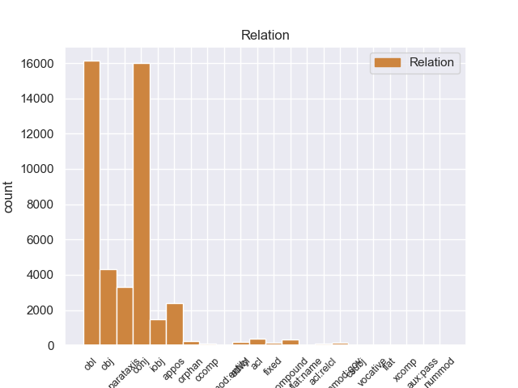
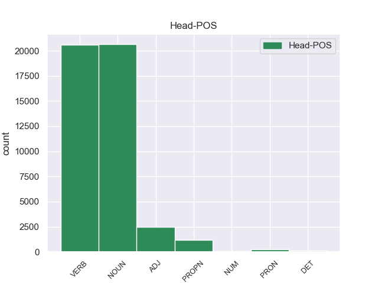
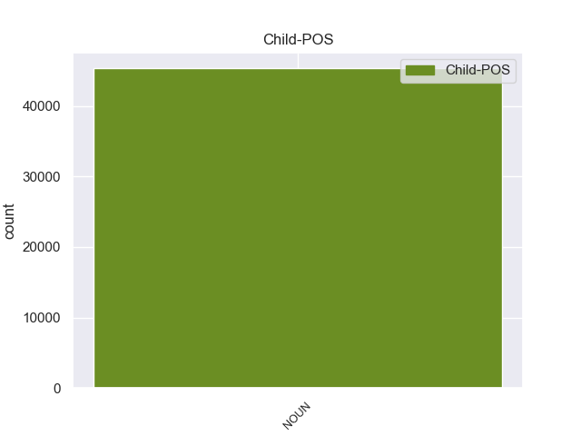

Distribution of features within this leaf



Agreement Rules sorted by frequency.
- When the dependent token is the conjunct(conj) of the head token, and the head token is NOUN and the dependent token is NOUN.
1 Я _ _ _ _ 0 _ _ _
2 пожал _ _ _ _ 0 _ _ _
3 плечами _ _ _ _ 0 _ _ _
4 и _ _ _ _ 0 _ _ _
5 , _ _ _ _ 0 _ _ _
6 нагнувшись _ _ _ _ 0 _ _ _
7 , _ _ _ _ 0 _ _ _
8 выдрал _ _ _ _ 0 _ _ _
9 куст _ _ _ _ 0 _ _ _
10 чертополоха _ _ _ _ 0 _ _ _
11 с _ _ _ _ 0 _ _ _
12 темно-красными _ _ _ _ 0 _ _ _
13 цветами цветы NOUN _ Animacy=Inan|Case=Ins|Gender=Masc|Number=Plur 0 _ _ _
14 и _ _ _ _ 0 _ _ _
15 цепкими _ _ _ _ 0 _ _ _
16 шипиками шипик NOUN _ Animacy=Inan|Case=Ins|Gender=Masc|Number=Plur 13 conj 13:conj SpaceAfter=No
17 . _ _ _ _ 0 _ _ _
1 Но _ _ _ _ 0 _ _ _
2 кто-то _ _ _ _ 0 _ _ _
3 идет _ _ _ _ 0 _ _ _
4 мне _ _ _ _ 0 _ _ _
5 навстречу _ _ _ _ 0 _ _ _
6 и _ _ _ _ 0 _ _ _
7 , _ _ _ _ 0 _ _ _
8 может _ _ _ _ 0 _ _ _
9 быть _ _ _ _ 0 _ _ _
10 , _ _ _ _ 0 _ _ _
11 прошел пройти VERB _ Aspect=Perf|Gender=Masc|Mood=Ind|Number=Sing|Tense=Past|VerbForm=Fin|Voice=Act 0 _ _ _
12 уже _ _ _ _ 0 _ _ _
13 пол _ _ _ _ 0 _ _ _
14 пути путь NOUN _ Animacy=Inan|Case=Gen|Gender=Masc|Number=Sing 11 obl 11:obl SpaceAfter=No
15 … _ _ _ _ 0 _ _ _
1 Он _ _ _ _ 0 _ _ _
2 осторожно _ _ _ _ 0 _ _ _
3 , _ _ _ _ 0 _ _ _
4 за _ _ _ _ 0 _ _ _
5 дужку _ _ _ _ 0 _ _ _
6 , _ _ _ _ 0 _ _ _
7 снял _ _ _ _ 0 _ _ _
8 очки _ _ _ _ 0 _ _ _
9 , _ _ _ _ 0 _ _ _
10 ему _ _ _ _ 0 _ _ _
11 хотелось _ _ _ _ 0 _ _ _
12 получше _ _ _ _ 0 _ _ _
13 рассмотреть _ _ _ _ 0 _ _ _
14 человека _ _ _ _ 0 _ _ _
15 , _ _ _ _ 0 _ _ _
16 задающего задавать VERB _ Animacy=Anim|Aspect=Imp|Case=Acc|Gender=Masc|Number=Sing|Tense=Pres|VerbForm=Part|Voice=Act 0 _ _ _
17 такие _ _ _ _ 0 _ _ _
18 несуразные _ _ _ _ 0 _ _ _
19 вопросы вопрос NOUN _ Animacy=Inan|Case=Acc|Gender=Masc|Number=Plur 16 obj 16:obj SpaceAfter=No
20 , _ _ _ _ 0 _ _ _
21 а _ _ _ _ 0 _ _ _
22 припылившиеся _ _ _ _ 0 _ _ _
23 стекла _ _ _ _ 0 _ _ _
24 только _ _ _ _ 0 _ _ _
25 мешали _ _ _ _ 0 _ _ _
26 . _ _ _ _ 0 _ _ _
1 Это _ _ _ _ 0 _ _ _
2 был _ _ _ _ 0 _ _ _
3 гриб гриб NOUN _ Animacy=Inan|Case=Nom|Gender=Masc|Number=Sing 0 _ _ _
4 - _ _ _ _ 0 _ _ _
5 генерал _ _ _ _ 0 _ _ _
6 , _ _ _ _ 0 _ _ _
7 настоящий _ _ _ _ 0 _ _ _
8 предводитель предводитель NOUN _ Animacy=Anim|Case=Nom|Gender=Masc|Number=Sing 3 appos 3:appos _
9 грибной _ _ _ _ 0 _ _ _
10 рати _ _ _ _ 0 _ _ _
11 , _ _ _ _ 0 _ _ _
12 он _ _ _ _ 0 _ _ _
13 не _ _ _ _ 0 _ _ _
14 мог _ _ _ _ 0 _ _ _
15 расти _ _ _ _ 0 _ _ _
16 в _ _ _ _ 0 _ _ _
17 одиночку _ _ _ _ 0 _ _ _
18 , _ _ _ _ 0 _ _ _
19 и _ _ _ _ 0 _ _ _
20 надо _ _ _ _ 0 _ _ _
21 было _ _ _ _ 0 _ _ _
22 обрыскать _ _ _ _ 0 _ _ _
23 хвойное _ _ _ _ 0 _ _ _
24 одеяло _ _ _ _ 0 _ _ _
25 у _ _ _ _ 0 _ _ _
26 подножия _ _ _ _ 0 _ _ _
27 ближайших _ _ _ _ 0 _ _ _
28 елей _ _ _ _ 0 _ _ _
29 , _ _ _ _ 0 _ _ _
30 но _ _ _ _ 0 _ _ _
31 я _ _ _ _ 0 _ _ _
32 как-то _ _ _ _ 0 _ _ _
33 ленился _ _ _ _ 0 _ _ _
34 , _ _ _ _ 0 _ _ _
35 и _ _ _ _ 0 _ _ _
36 тут _ _ _ _ 0 _ _ _
37 совсем _ _ _ _ 0 _ _ _
38 отчетливо _ _ _ _ 0 _ _ _
39 , _ _ _ _ 0 _ _ _
40 слышимый _ _ _ _ 0 _ _ _
41 не _ _ _ _ 0 _ _ _
42 внутренним _ _ _ _ 0 _ _ _
43 , _ _ _ _ 0 _ _ _
44 а _ _ _ _ 0 _ _ _
45 внешним _ _ _ _ 0 _ _ _
46 слухом _ _ _ _ 0 _ _ _
47 , _ _ _ _ 0 _ _ _
48 голос _ _ _ _ 0 _ _ _
49 , _ _ _ _ 0 _ _ _
50 исполненный _ _ _ _ 0 _ _ _
51 той _ _ _ _ 0 _ _ _
52 чистой _ _ _ _ 0 _ _ _
53 нежности _ _ _ _ 0 _ _ _
54 , _ _ _ _ 0 _ _ _
55 что _ _ _ _ 0 _ _ _
56 берегла _ _ _ _ 0 _ _ _
57 меня _ _ _ _ 0 _ _ _
58 в _ _ _ _ 0 _ _ _
59 детстве _ _ _ _ 0 _ _ _
60 , _ _ _ _ 0 _ _ _
61 произнес _ _ _ _ 0 _ _ _
62 : _ _ _ _ 0 _ _ _
63 - _ _ _ _ 0 _ _ _
64 Ищи _ _ _ _ 0 _ _ _
65 , _ _ _ _ 0 _ _ _
66 мальчик _ _ _ _ 0 _ _ _
67 , _ _ _ _ 0 _ _ _
68 ты _ _ _ _ 0 _ _ _
69 нырок _ _ _ _ 0 _ _ _
70 ! _ _ _ _ 0 _ _ _
71 . _ _ _ _ 0 _ _ _
72 . _ _ _ _ 0 _ _ _
1 - _ _ _ _ 0 _ _ _
2 Ты _ _ _ _ 0 _ _ _
3 дурак дурак NOUN _ Animacy=Anim|Case=Nom|Gender=Masc|Number=Sing 0 _ _ _
4 , _ _ _ _ 0 _ _ _
5 папа папа NOUN _ Animacy=Anim|Case=Nom|Gender=Masc|Number=Sing 3 parataxis 3:parataxis SpaceAfter=No
6 , _ _ _ _ 0 _ _ _
7 - _ _ _ _ 0 _ _ _
8 повторил _ _ _ _ 0 _ _ _
9 младший _ _ _ _ 0 _ _ _
10 и _ _ _ _ 0 _ _ _
11 заплакал _ _ _ _ 0 _ _ _
12 . _ _ _ _ 0 _ _ _
1 Тот _ _ _ _ 0 _ _ _
2 день _ _ _ _ 0 _ _ _
3 начался _ _ _ _ 0 _ _ _
4 с _ _ _ _ 0 _ _ _
5 маленького _ _ _ _ 0 _ _ _
6 чуда _ _ _ _ 0 _ _ _
7 : _ _ _ _ 0 _ _ _
8 оказалось _ _ _ _ 0 _ _ _
9 , _ _ _ _ 0 _ _ _
10 низинный _ _ _ _ 0 _ _ _
11 , _ _ _ _ 0 _ _ _
12 сыроватый _ _ _ _ 0 _ _ _
13 ольшаник _ _ _ _ 0 _ _ _
14 , _ _ _ _ 0 _ _ _
15 примыкающий _ _ _ _ 0 _ _ _
16 с _ _ _ _ 0 _ _ _
17 севера _ _ _ _ 0 _ _ _
18 к _ _ _ _ 0 _ _ _
19 дачной _ _ _ _ 0 _ _ _
20 ограде _ _ _ _ 0 _ _ _
21 , _ _ _ _ 0 _ _ _
22 сказочно _ _ _ _ 0 _ _ _
23 богат богатый ADJ _ Degree=Pos|Gender=Masc|Number=Sing|Variant=Short 0 _ _ _
24 грибами гриб NOUN _ Animacy=Inan|Case=Ins|Gender=Masc|Number=Plur 23 obl 23:obl _
25 свинушками _ _ _ _ 0 _ _ _
26 . _ _ _ _ 0 _ _ _
1 Мальчик _ _ _ _ 0 _ _ _
2 взял _ _ _ _ 0 _ _ _
3 свою _ _ _ _ 0 _ _ _
4 синь _ _ _ _ 0 _ _ _
5 и _ _ _ _ 0 _ _ _
6 свое _ _ _ _ 0 _ _ _
7 золото _ _ _ _ 0 _ _ _
8 от _ _ _ _ 0 _ _ _
9 Шурика Шурик PROPN _ Animacy=Anim|Case=Gen|Gender=Masc|Number=Sing 0 _ _ _
10 , _ _ _ _ 0 _ _ _
11 человека человек NOUN _ Animacy=Anim|Case=Gen|Gender=Masc|Number=Sing 9 appos 9:appos SpaceAfter=No
12 - _ _ _ _ 0 _ _ _
13 рыбки _ _ _ _ 0 _ _ _
14 , _ _ _ _ 0 _ _ _
15 но _ _ _ _ 0 _ _ _
16 в _ _ _ _ 0 _ _ _
17 отличие _ _ _ _ 0 _ _ _
18 от _ _ _ _ 0 _ _ _
19 Шурика _ _ _ _ 0 _ _ _
20 этот _ _ _ _ 0 _ _ _
21 маленький _ _ _ _ 0 _ _ _
22 упрямец _ _ _ _ 0 _ _ _
23 казался _ _ _ _ 0 _ _ _
24 крепко _ _ _ _ 0 _ _ _
25 заземленным _ _ _ _ 0 _ _ _
26 . _ _ _ _ 0 _ _ _
1 Но _ _ _ _ 0 _ _ _
2 даже _ _ _ _ 0 _ _ _
3 если _ _ _ _ 0 _ _ _
4 б _ _ _ _ 0 _ _ _
5 этот _ _ _ _ 0 _ _ _
6 мальчик _ _ _ _ 0 _ _ _
7 принадлежал принадлежать VERB _ Aspect=Imp|Gender=Masc|Mood=Ind|Number=Sing|Tense=Past|VerbForm=Fin|Voice=Act 0 _ _ _
8 сну сон NOUN _ Animacy=Inan|Case=Dat|Gender=Masc|Number=Sing 7 iobj 7:iobj SpaceAfter=No
9 , _ _ _ _ 0 _ _ _
10 он _ _ _ _ 0 _ _ _
11 затронул _ _ _ _ 0 _ _ _
12 мою _ _ _ _ 0 _ _ _
13 душу _ _ _ _ 0 _ _ _
14 неизмеримо _ _ _ _ 0 _ _ _
15 сильнее _ _ _ _ 0 _ _ _
16 многих _ _ _ _ 0 _ _ _
17 других _ _ _ _ 0 _ _ _
18 людей _ _ _ _ 0 _ _ _
19 , _ _ _ _ 0 _ _ _
20 чья _ _ _ _ 0 _ _ _
21 грубая _ _ _ _ 0 _ _ _
22 очевидность _ _ _ _ 0 _ _ _
23 не _ _ _ _ 0 _ _ _
24 вызывает _ _ _ _ 0 _ _ _
25 сомнения _ _ _ _ 0 _ _ _
26 . _ _ _ _ 0 _ _ _
1 Павлова Павлов PROPN _ Animacy=Anim|Case=Acc|Gender=Masc|Number=Sing 0 _ _ _
2 , _ _ _ _ 0 _ _ _
3 его _ _ _ _ 0 _ _ _
4 жену _ _ _ _ 0 _ _ _
5 , _ _ _ _ 0 _ _ _
6 их _ _ _ _ 0 _ _ _
7 родителей _ _ _ _ 0 _ _ _
8 и _ _ _ _ 0 _ _ _
9 дедов дед NOUN _ Animacy=Anim|Case=Acc|Gender=Masc|Number=Plur 1 conj 1:conj _
10 вскормил _ _ _ _ 0 _ _ _
11 город _ _ _ _ 0 _ _ _
12 , _ _ _ _ 0 _ _ _
13 но _ _ _ _ 0 _ _ _
14 давние _ _ _ _ 0 _ _ _
15 предки _ _ _ _ 0 _ _ _
16 Павлова _ _ _ _ 0 _ _ _
17 были _ _ _ _ 0 _ _ _
18 доброй _ _ _ _ 0 _ _ _
19 крестьянской _ _ _ _ 0 _ _ _
20 , _ _ _ _ 0 _ _ _
21 " _ _ _ _ 0 _ _ _
22 пскопской _ _ _ _ 0 _ _ _
23 " _ _ _ _ 0 _ _ _
24 закваски _ _ _ _ 0 _ _ _
25 , _ _ _ _ 0 _ _ _
26 и _ _ _ _ 0 _ _ _
27 казалось _ _ _ _ 0 _ _ _
28 , _ _ _ _ 0 _ _ _
29 сродство _ _ _ _ 0 _ _ _
30 славных _ _ _ _ 0 _ _ _
31 кривичей _ _ _ _ 0 _ _ _
32 с _ _ _ _ 0 _ _ _
33 миром _ _ _ _ 0 _ _ _
34 чистой _ _ _ _ 0 _ _ _
35 природы _ _ _ _ 0 _ _ _
36 через _ _ _ _ 0 _ _ _
37 поколения _ _ _ _ 0 _ _ _
38 в _ _ _ _ 0 _ _ _
39 полной _ _ _ _ 0 _ _ _
40 сохранности _ _ _ _ 0 _ _ _
41 передалось _ _ _ _ 0 _ _ _
42 двум _ _ _ _ 0 _ _ _
43 маленьким _ _ _ _ 0 _ _ _
44 горожанам _ _ _ _ 0 _ _ _
45 , _ _ _ _ 0 _ _ _
46 не _ _ _ _ 0 _ _ _
47 испытавшим _ _ _ _ 0 _ _ _
48 и _ _ _ _ 0 _ _ _
49 минутной _ _ _ _ 0 _ _ _
50 растерянности _ _ _ _ 0 _ _ _
51 в _ _ _ _ 0 _ _ _
52 мире _ _ _ _ 0 _ _ _
53 деревьев _ _ _ _ 0 _ _ _
54 , _ _ _ _ 0 _ _ _
55 трав _ _ _ _ 0 _ _ _
56 , _ _ _ _ 0 _ _ _
57 птиц _ _ _ _ 0 _ _ _
58 , _ _ _ _ 0 _ _ _
59 широких _ _ _ _ 0 _ _ _
60 далей _ _ _ _ 0 _ _ _
61 и _ _ _ _ 0 _ _ _
62 большого _ _ _ _ 0 _ _ _
63 неба _ _ _ _ 0 _ _ _
64 . _ _ _ _ 0 _ _ _
1 Видимо _ _ _ _ 0 _ _ _
2 , _ _ _ _ 0 _ _ _
3 это _ _ _ _ 0 _ _ _
4 он _ _ _ _ 0 _ _ _
5 и _ _ _ _ 0 _ _ _
6 называл называть VERB _ Aspect=Imp|Gender=Masc|Mood=Ind|Number=Sing|Tense=Past|VerbForm=Fin|Voice=Act 0 _ _ _
7 так _ _ _ _ 0 _ _ _
8 звучно _ _ _ _ 0 _ _ _
9 : _ _ _ _ 0 _ _ _
10 " _ _ _ _ 0 _ _ _
11 конъюнктивит конъюнктивит NOUN _ Animacy=Inan|Case=Nom|Gender=Masc|Number=Sing 6 parataxis 6:parataxis SpaceAfter=No
12 " _ _ _ _ 0 _ _ _
13 . _ _ _ _ 0 _ _ _
1 Они _ _ _ _ 0 _ _ _
2 говорили _ _ _ _ 0 _ _ _
3 единственно _ _ _ _ 0 _ _ _
4 друг друг NOUN _ Animacy=Anim|Case=Nom|Gender=Masc|Number=Sing 0 _ _ _
5 для _ _ _ _ 0 _ _ _
6 друга друг NOUN _ Animacy=Anim|Case=Gen|Gender=Masc|Number=Sing 4 fixed 4:fixed SpaceAfter=No
7 , _ _ _ _ 0 _ _ _
8 просто _ _ _ _ 0 _ _ _
9 и _ _ _ _ 0 _ _ _
10 серьезно _ _ _ _ 0 _ _ _
11 , _ _ _ _ 0 _ _ _
12 и _ _ _ _ 0 _ _ _
13 Павлова _ _ _ _ 0 _ _ _
14 удручала _ _ _ _ 0 _ _ _
15 серьезность _ _ _ _ 0 _ _ _
16 этого _ _ _ _ 0 _ _ _
17 взаимного _ _ _ _ 0 _ _ _
18 розыгрыша _ _ _ _ 0 _ _ _
19 с _ _ _ _ 0 _ _ _
20 открытыми _ _ _ _ 0 _ _ _
21 картами _ _ _ _ 0 _ _ _
22 . _ _ _ _ 0 _ _ _
1 В _ _ _ _ 0 _ _ _
2 сущности сущность NOUN _ Animacy=Inan|Case=Acc|Gender=Fem|Number=Plur 4 parataxis 4:parataxis SpaceAfter=No
3 , _ _ _ _ 0 _ _ _
4 такова таков ADJ _ Degree=Pos|Gender=Fem|Number=Sing|Variant=Short 0 _ _ _
5 она _ _ _ _ 0 _ _ _
6 и _ _ _ _ 0 _ _ _
7 сегодня _ _ _ _ 0 _ _ _
8 , _ _ _ _ 0 _ _ _
9 на _ _ _ _ 0 _ _ _
10 исходе _ _ _ _ 0 _ _ _
11 XX _ _ _ _ 0 _ _ _
12 века _ _ _ _ 0 _ _ _
13 . _ _ _ _ 0 _ _ _
1 Мне _ _ _ _ 0 _ _ _
2 и _ _ _ _ 0 _ _ _
3 сейчас _ _ _ _ 0 _ _ _
4 эта _ _ _ _ 0 _ _ _
5 книга _ _ _ _ 0 _ _ _
6 представляется _ _ _ _ 0 _ _ _
7 гимном гимн NOUN _ Animacy=Inan|Case=Ins|Gender=Masc|Number=Sing 0 _ _ _
8 торжествующему _ _ _ _ 0 _ _ _
9 быту быт NOUN _ Animacy=Inan|Case=Dat|Gender=Masc|Number=Sing 7 iobj 7:iobj SpaceAfter=No
10 . _ _ _ _ 0 _ _ _
1 Был _ _ _ _ 0 _ _ _
2 ли _ _ _ _ 0 _ _ _
3 в _ _ _ _ 0 _ _ _
4 яви _ _ _ _ 0 _ _ _
5 или _ _ _ _ 0 _ _ _
6 только _ _ _ _ 0 _ _ _
7 приснился _ _ _ _ 0 _ _ _
8 мне _ _ _ _ 0 _ _ _
9 этот _ _ _ _ 0 _ _ _
10 странный _ _ _ _ 0 _ _ _
11 мальчик мальчик NOUN _ Animacy=Anim|Case=Nom|Gender=Masc|Number=Sing 0 _ _ _
12 , _ _ _ _ 0 _ _ _
13 овеянный _ _ _ _ 0 _ _ _
14 нежностью _ _ _ _ 0 _ _ _
15 и _ _ _ _ 0 _ _ _
16 печалью _ _ _ _ 0 _ _ _
17 нездешности _ _ _ _ 0 _ _ _
18 , _ _ _ _ 0 _ _ _
19 как _ _ _ _ 0 _ _ _
20 Маленький _ _ _ _ 0 _ _ _
21 принц принц NOUN _ Animacy=Anim|Case=Nom|Gender=Masc|Number=Sing 11 acl 11:acl _
22 Антуана _ _ _ _ 0 _ _ _
23 де _ _ _ _ 0 _ _ _
24 Сент-Экзюпери _ _ _ _ 0 _ _ _
25 . _ _ _ _ 0 _ _ _
1 Мировой _ _ _ _ 0 _ _ _
2 океан _ _ _ _ 0 _ _ _
3 - _ _ _ _ 0 _ _ _
4 это _ _ _ _ 0 _ _ _
5 более _ _ _ _ 0 _ _ _
6 одного _ _ _ _ 0 _ _ _
7 миллиарда миллиард NOUN _ Animacy=Inan|Case=Gen|Gender=Masc|Number=Sing 9 nummod:gov 9:nummod:gov _
8 кубических _ _ _ _ 0 _ _ _
9 километров километр NOUN _ Animacy=Inan|Case=Gen|Gender=Masc|Number=Plur 0 _ _ _
10 воды _ _ _ _ 0 _ _ _
11 . _ _ _ _ 0 _ _ _
1 Весь _ _ _ _ 0 _ _ _
2 лес _ _ _ _ 0 _ _ _
3 был _ _ _ _ 0 _ _ _
4 населен _ _ _ _ 0 _ _ _
5 голосами _ _ _ _ 0 _ _ _
6 прошлого _ _ _ _ 0 _ _ _
7 , _ _ _ _ 0 _ _ _
8 и _ _ _ _ 0 _ _ _
9 я _ _ _ _ 0 _ _ _
10 впервые _ _ _ _ 0 _ _ _
11 с _ _ _ _ 0 _ _ _
12 ошеломляющей _ _ _ _ 0 _ _ _
13 силой _ _ _ _ 0 _ _ _
14 ощутил _ _ _ _ 0 _ _ _
15 , _ _ _ _ 0 _ _ _
16 как _ _ _ _ 0 _ _ _
17 много _ _ _ _ 0 _ _ _
18 пробыл пробыть VERB _ Aspect=Perf|Gender=Masc|Mood=Ind|Number=Sing|Tense=Past|VerbForm=Fin|Voice=Act 0 _ _ _
19 на _ _ _ _ 0 _ _ _
20 этом _ _ _ _ 0 _ _ _
21 свете _ _ _ _ 0 _ _ _
22 и _ _ _ _ 0 _ _ _
23 что _ _ _ _ 0 _ _ _
24 прожитое _ _ _ _ 0 _ _ _
25 - _ _ _ _ 0 _ _ _
26 это _ _ _ _ 0 _ _ _
27 не _ _ _ _ 0 _ _ _
28 разбег разбег NOUN _ Animacy=Inan|Case=Nom|Gender=Masc|Number=Sing 18 conj 18:conj _
29 для _ _ _ _ 0 _ _ _
30 взлета _ _ _ _ 0 _ _ _
31 в _ _ _ _ 0 _ _ _
32 какую-то _ _ _ _ 0 _ _ _
33 будущую _ _ _ _ 0 _ _ _
34 , _ _ _ _ 0 _ _ _
35 настоящую _ _ _ _ 0 _ _ _
36 жизнь _ _ _ _ 0 _ _ _
37 , _ _ _ _ 0 _ _ _
38 что _ _ _ _ 0 _ _ _
39 это _ _ _ _ 0 _ _ _
40 уже _ _ _ _ 0 _ _ _
41 жизнь _ _ _ _ 0 _ _ _
42 , _ _ _ _ 0 _ _ _
43 в _ _ _ _ 0 _ _ _
44 которой _ _ _ _ 0 _ _ _
45 все _ _ _ _ 0 _ _ _
46 связано _ _ _ _ 0 _ _ _
47 : _ _ _ _ 0 _ _ _
48 далекое _ _ _ _ 0 _ _ _
49 прошлое _ _ _ _ 0 _ _ _
49.1 _ _ _ _ _ 0 _ _ _
50 с _ _ _ _ 0 _ _ _
51 настоящим _ _ _ _ 0 _ _ _
52 , _ _ _ _ 0 _ _ _
53 а _ _ _ _ 0 _ _ _
54 если _ _ _ _ 0 _ _ _
55 мне _ _ _ _ 0 _ _ _
56 суждено _ _ _ _ 0 _ _ _
57 будущее _ _ _ _ 0 _ _ _
58 , _ _ _ _ 0 _ _ _
59 то _ _ _ _ 0 _ _ _
60 и _ _ _ _ 0 _ _ _
61 оно _ _ _ _ 0 _ _ _
62 окажется _ _ _ _ 0 _ _ _
63 нерасторжимо _ _ _ _ 0 _ _ _
64 связанным _ _ _ _ 0 _ _ _
65 с _ _ _ _ 0 _ _ _
66 пережитым _ _ _ _ 0 _ _ _
67 ; _ _ _ _ 0 _ _ _
1 Возле _ _ _ _ 0 _ _ _
2 поселка _ _ _ _ 0 _ _ _
3 находился _ _ _ _ 0 _ _ _
4 санаторий _ _ _ _ 0 _ _ _
5 , _ _ _ _ 0 _ _ _
6 там _ _ _ _ 0 _ _ _
7 шло _ _ _ _ 0 _ _ _
8 строительство _ _ _ _ 0 _ _ _
9 и _ _ _ _ 0 _ _ _
10 была _ _ _ _ 0 _ _ _
11 нужда _ _ _ _ 0 _ _ _
12 в _ _ _ _ 0 _ _ _
13 главном _ _ _ _ 0 _ _ _
14 инженере _ _ _ _ 0 _ _ _
15 ; _ _ _ _ 0 _ _ _
16 под _ _ _ _ 0 _ _ _
17 боком _ _ _ _ 0 _ _ _
18 располагалась _ _ _ _ 0 _ _ _
19 отличная _ _ _ _ 0 _ _ _
20 школа школа NOUN _ Animacy=Inan|Case=Nom|Gender=Fem|Number=Sing 0 _ _ _
21 - _ _ _ _ 0 _ _ _
22 десятилетка десятилетка NOUN _ Animacy=Inan|Case=Nom|Gender=Fem|Number=Sing 20 compound 20:compound SpaceAfter=No
23 , _ _ _ _ 0 _ _ _
24 где _ _ _ _ 0 _ _ _
25 как _ _ _ _ 0 _ _ _
26 раз _ _ _ _ 0 _ _ _
27 нужен _ _ _ _ 0 _ _ _
28 был _ _ _ _ 0 _ _ _
29 преподаватель _ _ _ _ 0 _ _ _
30 английского _ _ _ _ 0 _ _ _
31 языка _ _ _ _ 0 _ _ _
32 , _ _ _ _ 0 _ _ _
33 а _ _ _ _ 0 _ _ _
34 жена _ _ _ _ 0 _ _ _
35 Павлова _ _ _ _ 0 _ _ _
36 занималась _ _ _ _ 0 _ _ _
37 техническими _ _ _ _ 0 _ _ _
38 переводами _ _ _ _ 0 _ _ _
39 с _ _ _ _ 0 _ _ _
40 английского _ _ _ _ 0 _ _ _
41 . _ _ _ _ 0 _ _ _
1 - _ _ _ _ 0 _ _ _
2 Она _ _ _ _ 0 _ _ _
3 вся _ _ _ _ 0 _ _ _
4 зеленая зеленый ADJ _ Case=Nom|Degree=Pos|Gender=Fem|Number=Sing 0 _ _ _
5 , _ _ _ _ 0 _ _ _
6 до _ _ _ _ 0 _ _ _
7 последнего _ _ _ _ 0 _ _ _
8 перышка _ _ _ _ 0 _ _ _
9 , _ _ _ _ 0 _ _ _
10 и _ _ _ _ 0 _ _ _
11 с _ _ _ _ 0 _ _ _
12 красной _ _ _ _ 0 _ _ _
13 головой голова NOUN _ Animacy=Inan|Case=Ins|Gender=Fem|Number=Sing 4 conj 4:conj SpaceAfter=No
14 ! _ _ _ _ 0 _ _ _
1 Весь _ _ _ _ 0 _ _ _
2 лес _ _ _ _ 0 _ _ _
3 был _ _ _ _ 0 _ _ _
4 населен _ _ _ _ 0 _ _ _
5 голосами _ _ _ _ 0 _ _ _
6 прошлого _ _ _ _ 0 _ _ _
7 , _ _ _ _ 0 _ _ _
8 и _ _ _ _ 0 _ _ _
9 я _ _ _ _ 0 _ _ _
10 впервые _ _ _ _ 0 _ _ _
11 с _ _ _ _ 0 _ _ _
12 ошеломляющей _ _ _ _ 0 _ _ _
13 силой _ _ _ _ 0 _ _ _
14 ощутил _ _ _ _ 0 _ _ _
15 , _ _ _ _ 0 _ _ _
16 как _ _ _ _ 0 _ _ _
17 много _ _ _ _ 0 _ _ _
18 пробыл _ _ _ _ 0 _ _ _
19 на _ _ _ _ 0 _ _ _
20 этом _ _ _ _ 0 _ _ _
21 свете _ _ _ _ 0 _ _ _
22 и _ _ _ _ 0 _ _ _
23 что _ _ _ _ 0 _ _ _
24 прожитое _ _ _ _ 0 _ _ _
25 - _ _ _ _ 0 _ _ _
26 это _ _ _ _ 0 _ _ _
27 не _ _ _ _ 0 _ _ _
28 разбег _ _ _ _ 0 _ _ _
29 для _ _ _ _ 0 _ _ _
30 взлета _ _ _ _ 0 _ _ _
31 в _ _ _ _ 0 _ _ _
32 какую-то _ _ _ _ 0 _ _ _
33 будущую _ _ _ _ 0 _ _ _
34 , _ _ _ _ 0 _ _ _
35 настоящую _ _ _ _ 0 _ _ _
36 жизнь _ _ _ _ 0 _ _ _
37 , _ _ _ _ 0 _ _ _
38 что _ _ _ _ 0 _ _ _
39 это _ _ _ _ 0 _ _ _
40 уже _ _ _ _ 0 _ _ _
41 жизнь _ _ _ _ 0 _ _ _
42 , _ _ _ _ 0 _ _ _
43 в _ _ _ _ 0 _ _ _
44 которой _ _ _ _ 0 _ _ _
45 все _ _ _ _ 0 _ _ _
46 связано _ _ _ _ 0 _ _ _
47 : _ _ _ _ 0 _ _ _
48 далекое _ _ _ _ 0 _ _ _
When the dependent token is the indirect object(iobj) of the head token, and the head token is ADJ and the dependent token is NOUN.
1 Как _ _ _ _ 0 _ _ _
2 мог _ _ _ _ 0 _ _ _
3 не _ _ _ _ 0 _ _ _
4 замечать _ _ _ _ 0 _ _ _
5 я _ _ _ _ 0 _ _ _
6 прежде _ _ _ _ 0 _ _ _
7 , _ _ _ _ 0 _ _ _
8 насколько _ _ _ _ 0 _ _ _
9 мир _ _ _ _ 0 _ _ _
10 , _ _ _ _ 0 _ _ _
11 в _ _ _ _ 0 _ _ _
12 котором _ _ _ _ 0 _ _ _
13 я _ _ _ _ 0 _ _ _
14 сейчас _ _ _ _ 0 _ _ _
15 живу _ _ _ _ 0 _ _ _
16 , _ _ _ _ 0 _ _ _
17 подобен подобный ADJ _ Degree=Pos|Gender=Masc|Number=Sing|Variant=Short 0 _ _ _
18 миру мир NOUN _ Animacy=Inan|Case=Dat|Gender=Masc|Number=Sing 17 iobj 17:iobj _
19 моих _ _ _ _ 0 _ _ _
20 детских _ _ _ _ 0 _ _ _
21 лет _ _ _ _ 0 _ _ _
22 ? _ _ _ _ 0 _ _ _
When the dependent token is the parataxis(parataxis) of the head token, and the head token is PROPN and the dependent token is NOUN.
1 Проект _ _ _ _ 0 _ _ _
2 предусматривает _ _ _ _ 0 _ _ _
3 , _ _ _ _ 0 _ _ _
4 что _ _ _ _ 0 _ _ _
5 использование _ _ _ _ 0 _ _ _
6 в _ _ _ _ 0 _ _ _
7 делопроизводстве _ _ _ _ 0 _ _ _
8 русского _ _ _ _ 0 _ _ _
9 языка _ _ _ _ 0 _ _ _
10 на _ _ _ _ 0 _ _ _
11 предприятиях _ _ _ _ 0 _ _ _
12 , _ _ _ _ 0 _ _ _
13 в _ _ _ _ 0 _ _ _
14 учреждениях _ _ _ _ 0 _ _ _
15 и _ _ _ _ 0 _ _ _
16 организациях _ _ _ _ 0 _ _ _
17 допускается _ _ _ _ 0 _ _ _
18 только _ _ _ _ 0 _ _ _
19 по _ _ _ _ 0 _ _ _
20 их _ _ _ _ 0 _ _ _
21 ходатайству _ _ _ _ 0 _ _ _
22 на _ _ _ _ 0 _ _ _
23 определенный _ _ _ _ 0 _ _ _
24 срок _ _ _ _ 0 _ _ _
25 после _ _ _ _ 0 _ _ _
26 соответствующего _ _ _ _ 0 _ _ _
27 согласования _ _ _ _ 0 _ _ _
28 в _ _ _ _ 0 _ _ _
29 порядке _ _ _ _ 0 _ _ _
30 , _ _ _ _ 0 _ _ _
31 установленном _ _ _ _ 0 _ _ _
32 Президиумом _ _ _ _ 0 _ _ _
33 Верховного _ _ _ _ 0 _ _ _
34 Совета _ _ _ _ 0 _ _ _
35 Эстонской _ _ _ _ 0 _ _ _
36 ССР ССР PROPN _ Animacy=Inan|Case=Gen|Gender=Fem|Number=Sing 0 _ _ _
37 ( _ _ _ _ 0 _ _ _
38 часть часть NOUN _ Animacy=Inan|Case=Nom|Gender=Fem|Number=Sing 36 parataxis 36:parataxis _
39 2 _ _ _ _ 0 _ _ _
40 статьи _ _ _ _ 0 _ _ _
41 12 _ _ _ _ 0 _ _ _
42 ) _ _ _ _ 0 _ _ _
43 . _ _ _ _ 0 _ _ _
When the dependent token is the adverbial clause modifier(advcl) of the head token, and the head token is VERB and the dependent token is NOUN.
1 Никогда _ _ _ _ 0 _ _ _
2 не _ _ _ _ 0 _ _ _
3 был _ _ _ _ 0 _ _ _
4 он _ _ _ _ 0 _ _ _
5 так _ _ _ _ 0 _ _ _
6 загружен загрузить VERB _ Aspect=Perf|Gender=Masc|Number=Sing|Tense=Past|Variant=Short|VerbForm=Part|Voice=Pass 0 _ _ _
7 и _ _ _ _ 0 _ _ _
8 обременен _ _ _ _ 0 _ _ _
9 делами _ _ _ _ 0 _ _ _
10 , _ _ _ _ 0 _ _ _
11 как _ _ _ _ 0 _ _ _
12 в _ _ _ _ 0 _ _ _
13 годы год NOUN _ Animacy=Inan|Case=Acc|Gender=Masc|Number=Plur 6 advcl 6:advcl _
14 детства _ _ _ _ 0 _ _ _
15 . _ _ _ _ 0 _ _ _
When the dependent token is the relative clause modifier(acl:relcl) of the head token, and the head token is NOUN and the dependent token is NOUN.
1 Такая _ _ _ _ 0 _ _ _
2 технология _ _ _ _ 0 _ _ _
3 имела _ _ _ _ 0 _ _ _
4 много _ _ _ _ 0 _ _ _
5 недостатков недостаток NOUN _ Animacy=Inan|Case=Gen|Gender=Masc|Number=Plur 0 _ _ _
6 , _ _ _ _ 0 _ _ _
7 главные _ _ _ _ 0 _ _ _
8 из _ _ _ _ 0 _ _ _
9 которых _ _ _ _ 0 _ _ _
10 - _ _ _ _ 0 _ _ _
11 разброс разброс NOUN _ Animacy=Inan|Case=Nom|Gender=Masc|Number=Sing 5 acl:relcl 5:acl:relcl _
12 по _ _ _ _ 0 _ _ _
13 толщине _ _ _ _ 0 _ _ _
14 , _ _ _ _ 0 _ _ _
15 а _ _ _ _ 0 _ _ _
16 значит _ _ _ _ 0 _ _ _
17 , _ _ _ _ 0 _ _ _
18 и _ _ _ _ 0 _ _ _
19 по _ _ _ _ 0 _ _ _
20 параметрам _ _ _ _ 0 _ _ _
21 , _ _ _ _ 0 _ _ _
22 и _ _ _ _ 0 _ _ _
23 ручной _ _ _ _ 0 _ _ _
24 труд _ _ _ _ 0 _ _ _
25 . _ _ _ _ 0 _ _ _
When the dependent token is the clausal complement(ccomp) of the head token, and the head token is VERB and the dependent token is NOUN.
1 Выступивший _ _ _ _ 0 _ _ _
2 в _ _ _ _ 0 _ _ _
3 заключение _ _ _ _ 0 _ _ _
4 В. _ _ _ _ 0 _ _ _
5 А. _ _ _ _ 0 _ _ _
6 Медведев _ _ _ _ 0 _ _ _
7 подчеркнул подчеркнуть VERB _ Aspect=Perf|Gender=Masc|Mood=Ind|Number=Sing|Tense=Past|VerbForm=Fin|Voice=Act 0 _ _ _
8 , _ _ _ _ 0 _ _ _
9 что _ _ _ _ 0 _ _ _
10 нынешние _ _ _ _ 0 _ _ _
11 выборы _ _ _ _ 0 _ _ _
12 - _ _ _ _ 0 _ _ _
13 крупный _ _ _ _ 0 _ _ _
14 шаг шаг NOUN _ Animacy=Inan|Case=Nom|Gender=Masc|Number=Sing 7 ccomp 7:ccomp _
15 на _ _ _ _ 0 _ _ _
16 пути _ _ _ _ 0 _ _ _
17 демократизации _ _ _ _ 0 _ _ _
18 . _ _ _ _ 0 _ _ _
When the dependent token is the adjectival clause(acl) of the head token, and the head token is PRON and the dependent token is NOUN.
1 Мы _ _ _ _ 0 _ _ _
2 идем _ _ _ _ 0 _ _ _
3 к _ _ _ _ 0 _ _ _
4 тому то PRON _ Animacy=Inan|Case=Dat|Gender=Neut|Number=Sing 0 _ _ _
5 , _ _ _ _ 0 _ _ _
6 чтобы _ _ _ _ 0 _ _ _
7 самым _ _ _ _ 0 _ _ _
8 влиятельным _ _ _ _ 0 _ _ _
9 , _ _ _ _ 0 _ _ _
10 самым _ _ _ _ 0 _ _ _
11 важным _ _ _ _ 0 _ _ _
12 звеном звено NOUN _ Animacy=Inan|Case=Ins|Gender=Neut|Number=Sing 4 acl 4:acl SpaceAfter=No
13 , _ _ _ _ 0 _ _ _
14 где _ _ _ _ 0 _ _ _
15 принимаются _ _ _ _ 0 _ _ _
16 все _ _ _ _ 0 _ _ _
17 решения _ _ _ _ 0 _ _ _
18 , _ _ _ _ 0 _ _ _
19 была _ _ _ _ 0 _ _ _
20 первичка _ _ _ _ 0 _ _ _
21 и _ _ _ _ 0 _ _ _
22 район _ _ _ _ 0 _ _ _
23 . _ _ _ _ 0 _ _ _
When the dependent token is the conjunct(conj) of the head token, and the head token is PRON and the dependent token is NOUN.
1 Был _ _ _ _ 0 _ _ _
2 же _ _ _ _ 0 _ _ _
3 у _ _ _ _ 0 _ _ _
4 него он PRON _ Case=Gen|Gender=Masc|Number=Sing|Person=3 0 _ _ _
5 опыт _ _ _ _ 0 _ _ _
6 собственного _ _ _ _ 0 _ _ _
7 детства _ _ _ _ 0 _ _ _
8 , _ _ _ _ 0 _ _ _
9 был _ _ _ _ 0 _ _ _
10 же _ _ _ _ 0 _ _ _
11 он _ _ _ _ 0 _ _ _
12 сам _ _ _ _ 0 _ _ _
13 ребенком ребенок NOUN _ Animacy=Anim|Case=Ins|Gender=Masc|Number=Sing 4 conj 4:conj SpaceAfter=No
14 ! _ _ _ _ 0 _ _ _
When the dependent token is the appositional modifier(appos) of the head token, and the head token is PRON and the dependent token is NOUN.
1 Оно оно PRON _ Case=Nom|Gender=Neut|Number=Sing|Person=3 0 _ _ _
2 было _ _ _ _ 0 _ _ _
3 неправдоподобно _ _ _ _ 0 _ _ _
4 тихим _ _ _ _ 0 _ _ _
5 , _ _ _ _ 0 _ _ _
6 это _ _ _ _ 0 _ _ _
7 стадо стадо NOUN _ Animacy=Inan|Case=Nom|Gender=Neut|Number=Sing 1 appos 1:appos SpaceAfter=No
8 ; _ _ _ _ 0 _ _ _
9 коровы _ _ _ _ 0 _ _ _
10 лежали _ _ _ _ 0 _ _ _
11 , _ _ _ _ 0 _ _ _
12 словно _ _ _ _ 0 _ _ _
13 затаясь _ _ _ _ 0 _ _ _
14 , _ _ _ _ 0 _ _ _
15 чем-то _ _ _ _ 0 _ _ _
16 опасным _ _ _ _ 0 _ _ _
17 веяло _ _ _ _ 0 _ _ _
18 от _ _ _ _ 0 _ _ _
19 их _ _ _ _ 0 _ _ _
20 бесшумности _ _ _ _ 0 _ _ _
21 . _ _ _ _ 0 _ _ _
When the dependent token is the oblique nominal(obl) of the head token, and the head token is DET and the dependent token is NOUN.
1 Но _ _ _ _ 0 _ _ _
2 как _ _ _ _ 0 _ _ _
3 можно _ _ _ _ 0 _ _ _
4 правильно _ _ _ _ 0 _ _ _
5 понять _ _ _ _ 0 _ _ _
6 , _ _ _ _ 0 _ _ _
7 а _ _ _ _ 0 _ _ _
8 тем _ _ _ _ 0 _ _ _
9 более _ _ _ _ 0 _ _ _
10 правильно _ _ _ _ 0 _ _ _
11 решать _ _ _ _ 0 _ _ _
12 вопросы _ _ _ _ 0 _ _ _
13 культуры _ _ _ _ 0 _ _ _
14 , _ _ _ _ 0 _ _ _
15 медицины _ _ _ _ 0 _ _ _
16 , _ _ _ _ 0 _ _ _
17 образования _ _ _ _ 0 _ _ _
18 , _ _ _ _ 0 _ _ _
19 экономики _ _ _ _ 0 _ _ _
20 , _ _ _ _ 0 _ _ _
21 не _ _ _ _ 0 _ _ _
22 учитывая _ _ _ _ 0 _ _ _
23 интересов _ _ _ _ 0 _ _ _
24 такой такой DET _ Case=Gen|Gender=Fem|Number=Sing 0 _ _ _
25 социально _ _ _ _ 0 _ _ _
26 - _ _ _ _ 0 _ _ _
27 демографической _ _ _ _ 0 _ _ _
28 группы _ _ _ _ 0 _ _ _
29 общества _ _ _ _ 0 _ _ _
30 , _ _ _ _ 0 _ _ _
31 как _ _ _ _ 0 _ _ _
32 молодежь молодежь NOUN _ Animacy=Inan|Case=Nom|Gender=Fem|Number=Sing 24 obl 24:obl SpaceAfter=No
33 . _ _ _ _ 0 _ _ _
When the dependent token is the parataxis(parataxis) of the head token, and the head token is PRON and the dependent token is NOUN.
1 Опять _ _ _ _ 0 _ _ _
2 он он PRON _ Case=Nom|Gender=Masc|Number=Sing|Person=3 0 _ _ _
3 вернулся _ _ _ _ 0 _ _ _
4 ко _ _ _ _ 0 _ _ _
5 мне _ _ _ _ 0 _ _ _
6 : _ _ _ _ 0 _ _ _
7 силач силач NOUN _ Animacy=Anim|Case=Nom|Gender=Masc|Number=Sing 2 parataxis 2:parataxis SpaceAfter=No
8 , _ _ _ _ 0 _ _ _
9 храбрец _ _ _ _ 0 _ _ _
10 , _ _ _ _ 0 _ _ _
11 герой _ _ _ _ 0 _ _ _
12 , _ _ _ _ 0 _ _ _
13 остряк _ _ _ _ 0 _ _ _
14 , _ _ _ _ 0 _ _ _
15 бретер _ _ _ _ 0 _ _ _
16 , _ _ _ _ 0 _ _ _
17 победитель _ _ _ _ 0 _ _ _
18 . _ _ _ _ 0 _ _ _
When the dependent token is the adjectival clause(acl) of the head token, and the head token is PROPN and the dependent token is NOUN.
1 Надо _ _ _ _ 0 _ _ _
2 сказать _ _ _ _ 0 _ _ _
3 , _ _ _ _ 0 _ _ _
4 что _ _ _ _ 0 _ _ _
5 в _ _ _ _ 0 _ _ _
6 Минске Минск PROPN _ Animacy=Inan|Case=Loc|Gender=Masc|Number=Sing 0 _ _ _
7 , _ _ _ _ 0 _ _ _
8 как _ _ _ _ 0 _ _ _
9 , _ _ _ _ 0 _ _ _
10 думаю _ _ _ _ 0 _ _ _
11 , _ _ _ _ 0 _ _ _
12 и _ _ _ _ 0 _ _ _
13 в _ _ _ _ 0 _ _ _
14 других _ _ _ _ 0 _ _ _
15 городах город NOUN _ Animacy=Inan|Case=Loc|Gender=Masc|Number=Plur 6 acl 6:acl _
16 СССР _ _ _ _ 0 _ _ _
17 , _ _ _ _ 0 _ _ _
18 буквально _ _ _ _ 0 _ _ _
19 вспыхивали _ _ _ _ 0 _ _ _
20 эпидемии _ _ _ _ 0 _ _ _
21 воровства _ _ _ _ 0 _ _ _
22 и _ _ _ _ 0 _ _ _
23 бандитизма _ _ _ _ 0 _ _ _
24 . _ _ _ _ 0 _ _ _
When the dependent token is the appositional modifier(appos) of the head token, and the head token is NUM and the dependent token is NOUN.
1 Один один NUM _ Case=Nom|Gender=Masc 0 _ _ _
2 из _ _ _ _ 0 _ _ _
3 грабителей _ _ _ _ 0 _ _ _
4 , _ _ _ _ 0 _ _ _
5 23-летний _ _ _ _ 0 _ _ _
6 итальянец итальянец NOUN _ Animacy=Anim|Case=Nom|Gender=Masc|Number=Sing 1 appos 1:appos SpaceAfter=No
7 , _ _ _ _ 0 _ _ _
8 проживающий _ _ _ _ 0 _ _ _
9 в _ _ _ _ 0 _ _ _
10 ФРГ _ _ _ _ 0 _ _ _
11 , _ _ _ _ 0 _ _ _
12 был _ _ _ _ 0 _ _ _
13 задержан _ _ _ _ 0 _ _ _
14 пограничниками _ _ _ _ 0 _ _ _
15 . _ _ _ _ 0 _ _ _
When the dependent token is the conjunct(conj) of the head token, and the head token is NUM and the dependent token is NOUN.
1 - _ _ _ _ 0 _ _ _
2 На _ _ _ _ 0 _ _ _
3 практике _ _ _ _ 0 _ _ _
4 этот _ _ _ _ 0 _ _ _
5 принцип _ _ _ _ 0 _ _ _
6 был _ _ _ _ 0 _ _ _
7 реализован _ _ _ _ 0 _ _ _
8 , _ _ _ _ 0 _ _ _
9 можно _ _ _ _ 0 _ _ _
10 сказать _ _ _ _ 0 _ _ _
11 , _ _ _ _ 0 _ _ _
12 случайно _ _ _ _ 0 _ _ _
13 , _ _ _ _ 0 _ _ _
14 - _ _ _ _ 0 _ _ _
15 рассказывает _ _ _ _ 0 _ _ _
16 один один NUM _ Case=Nom|Gender=Masc 0 _ _ _
17 из _ _ _ _ 0 _ _ _
18 создателей _ _ _ _ 0 _ _ _
19 таких _ _ _ _ 0 _ _ _
20 станков _ _ _ _ 0 _ _ _
21 , _ _ _ _ 0 _ _ _
22 доктор доктор NOUN _ Animacy=Anim|Case=Nom|Gender=Masc|Number=Sing 16 conj 16:conj _
23 технических _ _ _ _ 0 _ _ _
24 наук _ _ _ _ 0 _ _ _
25 П. _ _ _ _ 0 _ _ _
26 М. _ _ _ _ 0 _ _ _
27 Чернянский _ _ _ _ 0 _ _ _
28 . _ _ _ _ 0 _ _ _
When the dependent token is the adverbial clause modifier(advcl) of the head token, and the head token is ADJ and the dependent token is NOUN.
1 Захариаш _ _ _ _ 0 _ _ _
2 известен известный ADJ _ Degree=Pos|Gender=Masc|Number=Sing|Variant=Short 0 _ _ _
3 как _ _ _ _ 0 _ _ _
4 режиссер режиссер NOUN _ Animacy=Anim|Case=Nom|Gender=Masc|Number=Sing 2 advcl 2:advcl _
5 рекламных _ _ _ _ 0 _ _ _
6 роликов _ _ _ _ 0 _ _ _
7 , _ _ _ _ 0 _ _ _
8 за _ _ _ _ 0 _ _ _
9 которые _ _ _ _ 0 _ _ _
10 был _ _ _ _ 0 _ _ _
11 дважды _ _ _ _ 0 _ _ _
12 награжден _ _ _ _ 0 _ _ _
13 " _ _ _ _ 0 _ _ _
14 Золотым _ _ _ _ 0 _ _ _
15 львом _ _ _ _ 0 _ _ _
16 " _ _ _ _ 0 _ _ _
17 - _ _ _ _ 0 _ _ _
18 главным _ _ _ _ 0 _ _ _
19 призом _ _ _ _ 0 _ _ _
20 фестиваля _ _ _ _ 0 _ _ _
21 рекламы _ _ _ _ 0 _ _ _
22 в _ _ _ _ 0 _ _ _
23 Каннах _ _ _ _ 0 _ _ _
24 . _ _ _ _ 0 _ _ _
When the dependent token is the conjunct(conj) of the head token, and the head token is DET and the dependent token is NOUN.
1 - _ _ _ _ 0 _ _ _
2 Обедать _ _ _ _ 0 _ _ _
3 ! _ _ _ _ 0 _ _ _
4 … _ _ _ _ 0 _ _ _
5 - _ _ _ _ 0 _ _ _
6 послышался _ _ _ _ 0 _ _ _
7 голос _ _ _ _ 0 _ _ _
8 мамы _ _ _ _ 0 _ _ _
9 , _ _ _ _ 0 _ _ _
10 и _ _ _ _ 0 _ _ _
11 , _ _ _ _ 0 _ _ _
12 грустно _ _ _ _ 0 _ _ _
13 окинув _ _ _ _ 0 _ _ _
14 взглядом _ _ _ _ 0 _ _ _
15 свой свой DET _ Case=Acc|Gender=Masc|Number=Sing 0 _ _ _
16 прекрасно _ _ _ _ 0 _ _ _
17 оснащенный _ _ _ _ 0 _ _ _
18 , _ _ _ _ 0 _ _ _
19 с _ _ _ _ 0 _ _ _
20 поднятыми _ _ _ _ 0 _ _ _
21 парусами _ _ _ _ 0 _ _ _
22 , _ _ _ _ 0 _ _ _
23 с _ _ _ _ 0 _ _ _
24 полными _ _ _ _ 0 _ _ _
25 трюмами трюм NOUN _ Animacy=Inan|Case=Ins|Gender=Masc|Number=Plur 15 conj 15:conj SpaceAfter=No
26 , _ _ _ _ 0 _ _ _
27 готовый _ _ _ _ 0 _ _ _
28 к _ _ _ _ 0 _ _ _
29 покорению _ _ _ _ 0 _ _ _
30 пространства _ _ _ _ 0 _ _ _
31 корабль _ _ _ _ 0 _ _ _
32 , _ _ _ _ 0 _ _ _
33 я _ _ _ _ 0 _ _ _
34 сошел _ _ _ _ 0 _ _ _
35 на _ _ _ _ 0 _ _ _
36 сушу _ _ _ _ 0 _ _ _
37 . _ _ _ _ 0 _ _ _
When the dependent token is the adverbial clause modifier(advcl) of the head token, and the head token is NOUN and the dependent token is NOUN.
1 Если _ _ _ _ 0 _ _ _
2 для _ _ _ _ 0 _ _ _
3 эстонцев _ _ _ _ 0 _ _ _
4 главная _ _ _ _ 0 _ _ _
5 ее _ _ _ _ 0 _ _ _
6 трудность _ _ _ _ 0 _ _ _
7 - _ _ _ _ 0 _ _ _
8 приобщение приобщение NOUN _ Animacy=Inan|Case=Nom|Gender=Neut|Number=Sing 17 advcl 17:advcl _
9 к _ _ _ _ 0 _ _ _
10 русской _ _ _ _ 0 _ _ _
11 языковой _ _ _ _ 0 _ _ _
12 стихии _ _ _ _ 0 _ _ _
13 , _ _ _ _ 0 _ _ _
14 то _ _ _ _ 0 _ _ _
15 для _ _ _ _ 0 _ _ _
16 белорусов _ _ _ _ 0 _ _ _
17 возвращение возвращение NOUN _ Animacy=Inan|Case=Nom|Gender=Neut|Number=Sing 0 _ _ _
18 к _ _ _ _ 0 _ _ _
19 коренному _ _ _ _ 0 _ _ _
20 языку _ _ _ _ 0 _ _ _
21 , _ _ _ _ 0 _ _ _
22 едва _ _ _ _ 0 _ _ _
23 ли _ _ _ _ 0 _ _ _
24 не _ _ _ _ 0 _ _ _
25 напрочь _ _ _ _ 0 _ _ _
26 выведенному _ _ _ _ 0 _ _ _
27 из _ _ _ _ 0 _ _ _
28 употребления _ _ _ _ 0 _ _ _
29 . _ _ _ _ 0 _ _ _
When the dependent token is the numeric modifer(nummod:entity) of the head token, and the head token is NOUN and the dependent token is NOUN.
1 Благодаря _ _ _ _ 0 _ _ _
2 бдительности _ _ _ _ 0 _ _ _
3 локомотивной _ _ _ _ 0 _ _ _
4 бригады _ _ _ _ 0 _ _ _
5 скорого _ _ _ _ 0 _ _ _
6 поезда поезд NOUN _ Animacy=Inan|Case=Gen|Gender=Masc|Number=Sing 0 _ _ _
7 номер номер NOUN _ Animacy=Inan|Case=Nom|Gender=Masc|Number=Sing 6 nummod:entity 6:nummod:entity _
8 49 _ _ _ _ 0 _ _ _
9 " _ _ _ _ 0 _ _ _
10 Кисловодск _ _ _ _ 0 _ _ _
11 - _ _ _ _ 0 _ _ _
12 Санкт-Петербург _ _ _ _ 0 _ _ _
13 " _ _ _ _ 0 _ _ _
14 на _ _ _ _ 0 _ _ _
15 Воронежском _ _ _ _ 0 _ _ _
16 отделении _ _ _ _ 0 _ _ _
17 Юго-Восточной _ _ _ _ 0 _ _ _
18 железной _ _ _ _ 0 _ _ _
19 дороги _ _ _ _ 0 _ _ _
20 предотвращена _ _ _ _ 0 _ _ _
21 крупная _ _ _ _ 0 _ _ _
22 авария _ _ _ _ 0 _ _ _
23 . _ _ _ _ 0 _ _ _
When the dependent token is the orphan(orphan) of the head token, and the head token is PROPN and the dependent token is NOUN.
1 В _ _ _ _ 0 _ _ _
2 ответ _ _ _ _ 0 _ _ _
3 на _ _ _ _ 0 _ _ _
4 требования _ _ _ _ 0 _ _ _
5 ОПЕК _ _ _ _ 0 _ _ _
6 , _ _ _ _ 0 _ _ _
7 Россия _ _ _ _ 0 _ _ _
8 намерена _ _ _ _ 0 _ _ _
9 сократить _ _ _ _ 0 _ _ _
10 объемы _ _ _ _ 0 _ _ _
11 экспорта _ _ _ _ 0 _ _ _
12 на _ _ _ _ 0 _ _ _
13 150 _ _ _ _ 0 _ _ _
14 тыс _ _ _ _ 0 _ _ _
15 баррелей _ _ _ _ 0 _ _ _
16 в _ _ _ _ 0 _ _ _
17 сутки _ _ _ _ 0 _ _ _
18 , _ _ _ _ 0 _ _ _
19 Норвегия _ _ _ _ 0 _ _ _
20 - _ _ _ _ 0 _ _ _
20.1 _ _ _ _ _ 0 _ _ _
20.2 _ _ _ _ _ 0 _ _ _
21 150 _ _ _ _ 0 _ _ _
22 тыс _ _ _ _ 0 _ _ _
23 , _ _ _ _ 0 _ _ _
24 Мексика _ _ _ _ 0 _ _ _
25 - _ _ _ _ 0 _ _ _
25.1 _ _ _ _ _ 0 _ _ _
25.2 _ _ _ _ _ 0 _ _ _
26 100 _ _ _ _ 0 _ _ _
27 тыс _ _ _ _ 0 _ _ _
28 , _ _ _ _ 0 _ _ _
29 Оман _ _ _ _ 0 _ _ _
30 - _ _ _ _ 0 _ _ _
30.1 _ _ _ _ _ 0 _ _ _
30.2 _ _ _ _ _ 0 _ _ _
31 40 _ _ _ _ 0 _ _ _
32 тыс _ _ _ _ 0 _ _ _
33 и _ _ _ _ 0 _ _ _
When the dependent token is the parataxis(parataxis) of the head token, and the head token is DET and the dependent token is NOUN.
1 Не _ _ _ _ 0 _ _ _
2 было _ _ _ _ 0 _ _ _
3 одного один DET _ Case=Gen|Degree=Pos|Gender=Masc|Number=Sing 0 _ _ _
4 - _ _ _ _ 0 _ _ _
5 навыка навык NOUN _ Animacy=Inan|Case=Gen|Gender=Masc|Number=Sing 3 parataxis 3:parataxis _
6 к _ _ _ _ 0 _ _ _
7 отвлеченности _ _ _ _ 0 _ _ _
8 , _ _ _ _ 0 _ _ _
9 к _ _ _ _ 0 _ _ _
10 мечте _ _ _ _ 0 _ _ _
11 . _ _ _ _ 0 _ _ _
When the dependent token is the fixed multiword expression(fixed) of the head token, and the head token is DET and the dependent token is NOUN.
1 Ключевой _ _ _ _ 0 _ _ _
2 период _ _ _ _ 0 _ _ _
3 был _ _ _ _ 0 _ _ _
4 примерно _ _ _ _ 0 _ _ _
5 3000 _ _ _ _ 0 _ _ _
6 лет _ _ _ _ 0 _ _ _
7 назад _ _ _ _ 0 _ _ _
8 , _ _ _ _ 0 _ _ _
9 в _ _ _ _ 0 _ _ _
10 первом _ _ _ _ 0 _ _ _
11 тысячелетии _ _ _ _ 0 _ _ _
12 до _ _ _ _ 0 _ _ _
13 н. наша DET _ Animacy=Inan|Case=Gen|Gender=Fem|Number=Sing 0 _ _ _
14 э эра NOUN _ Case=Gen|Degree=Pos|Gender=Fem|Number=Sing 13 fixed 13:fixed SpaceAfter=No
15 . _ _ _ _ 0 _ _ _
When the dependent token is the orphan(orphan) of the head token, and the head token is ADJ and the dependent token is NOUN.
1 На _ _ _ _ 0 _ _ _
2 режущих _ _ _ _ 0 _ _ _
3 кромках _ _ _ _ 0 _ _ _
4 инструмента _ _ _ _ 0 _ _ _
5 образуются _ _ _ _ 0 _ _ _
6 два _ _ _ _ 0 _ _ _
7 слоя _ _ _ _ 0 _ _ _
8 , _ _ _ _ 0 _ _ _
9 прочных _ _ _ _ 0 _ _ _
10 на _ _ _ _ 0 _ _ _
11 истирание _ _ _ _ 0 _ _ _
12 : _ _ _ _ 0 _ _ _
When the dependent token is the object(obj) of the head token, and the head token is NOUN and the dependent token is NOUN.
1 Знание _ _ _ _ 0 _ _ _
2 приносит _ _ _ _ 0 _ _ _
3 один _ _ _ _ 0 _ _ _
4 миллион миллион NOUN _ Animacy=Inan|Case=Acc|Gender=Masc|Number=Sing 5 obj 5:obj _
5 долларов доллар NOUN _ Animacy=Inan|Case=Gen|Gender=Masc|Number=Plur 0 _ _ _
6 единожды _ _ _ _ 0 _ _ _
7 , _ _ _ _ 0 _ _ _
8 обычно _ _ _ _ 0 _ _ _
9 в _ _ _ _ 0 _ _ _
10 конце _ _ _ _ 0 _ _ _
11 жизни _ _ _ _ 0 _ _ _
12 , _ _ _ _ 0 _ _ _
13 единицам _ _ _ _ 0 _ _ _
14 выдающихся _ _ _ _ 0 _ _ _
15 ученых _ _ _ _ 0 _ _ _
16 - _ _ _ _ 0 _ _ _
17 лауреатам _ _ _ _ 0 _ _ _
18 Нобелевской _ _ _ _ 0 _ _ _
19 премии _ _ _ _ 0 _ _ _
20 . _ _ _ _ 0 _ _ _
When the dependent token is the parataxis(parataxis) of the head token, and the head token is NUM and the dependent token is NOUN.
1 В _ _ _ _ 0 _ _ _
2 последнее _ _ _ _ 0 _ _ _
3 время _ _ _ _ 0 _ _ _
4 несколько _ _ _ _ 0 _ _ _
5 раз _ _ _ _ 0 _ _ _
6 проваливали _ _ _ _ 0 _ _ _
7 на _ _ _ _ 0 _ _ _
8 выборах _ _ _ _ 0 _ _ _
9 в _ _ _ _ 0 _ _ _
10 академики _ _ _ _ 0 _ _ _
11 одного один NUM _ Animacy=Anim|Case=Acc|Gender=Masc 0 _ _ _
12 из _ _ _ _ 0 _ _ _
13 крупнейших _ _ _ _ 0 _ _ _
14 современных _ _ _ _ 0 _ _ _
15 историков _ _ _ _ 0 _ _ _
16 - _ _ _ _ 0 _ _ _
17 члена-корреспондента член-корреспондент NOUN _ Animacy=Anim|Case=Acc|Gender=Masc|Number=Sing 11 parataxis 11:parataxis _
18 АН _ _ _ _ 0 _ _ _
19 СССР _ _ _ _ 0 _ _ _
20 В. _ _ _ _ 0 _ _ _
21 Янина _ _ _ _ 0 _ _ _
22 , _ _ _ _ 0 _ _ _
23 прославившегося _ _ _ _ 0 _ _ _
24 раскопками _ _ _ _ 0 _ _ _
25 в _ _ _ _ 0 _ _ _
26 Новгороде _ _ _ _ 0 _ _ _
27 , _ _ _ _ 0 _ _ _
28 находками _ _ _ _ 0 _ _ _
29 и _ _ _ _ 0 _ _ _
30 изучением _ _ _ _ 0 _ _ _
31 берестяных _ _ _ _ 0 _ _ _
32 грамот _ _ _ _ 0 _ _ _
33 . _ _ _ _ 0 _ _ _
When the dependent token is the flat multiword expression(flat) of the head token, and the head token is NOUN and the dependent token is NOUN.
1 Как _ _ _ _ 0 _ _ _
2 сообщили _ _ _ _ 0 _ _ _
3 в _ _ _ _ 0 _ _ _
4 штабе _ _ _ _ 0 _ _ _
5 Оперативной _ _ _ _ 0 _ _ _
6 группы _ _ _ _ 0 _ _ _
7 российских _ _ _ _ 0 _ _ _
8 войск _ _ _ _ 0 _ _ _
9 в _ _ _ _ 0 _ _ _
10 Приднестровье _ _ _ _ 0 _ _ _
11 , _ _ _ _ 0 _ _ _
12 в _ _ _ _ 0 _ _ _
13 24 _ _ _ _ 0 _ _ _
14 вагонах _ _ _ _ 0 _ _ _
15 вывозятся _ _ _ _ 0 _ _ _
16 ракетные _ _ _ _ 0 _ _ _
17 установки _ _ _ _ 0 _ _ _
18 класса _ _ _ _ 0 _ _ _
19 " _ _ _ _ 0 _ _ _
20 земля земля NOUN _ Animacy=Inan|Case=Nom|Gender=Fem|Number=Sing 0 _ _ _
21 - _ _ _ _ 0 _ _ _
22 земля земля NOUN _ Animacy=Inan|Case=Nom|Gender=Fem|Number=Sing 20 flat 20:flat SpaceAfter=No
23 " _ _ _ _ 0 _ _ _
24 Ураган _ _ _ _ 0 _ _ _
25 , _ _ _ _ 0 _ _ _
26 а _ _ _ _ 0 _ _ _
27 также _ _ _ _ 0 _ _ _
28 большое _ _ _ _ 0 _ _ _
29 количество _ _ _ _ 0 _ _ _
30 152-миллиметровых _ _ _ _ 0 _ _ _
31 снарядов _ _ _ _ 0 _ _ _
32 . _ _ _ _ 0 _ _ _
When the dependent token is the appositional modifier(appos) of the head token, and the head token is ADJ and the dependent token is NOUN.
1 Акционеры _ _ _ _ 0 _ _ _
2 ОАО _ _ _ _ 0 _ _ _
3 " _ _ _ _ 0 _ _ _
4 Балтика _ _ _ _ 0 _ _ _
5 - _ _ _ _ 0 _ _ _
6 Дон _ _ _ _ 0 _ _ _
7 " _ _ _ _ 0 _ _ _
8 и _ _ _ _ 0 _ _ _
9 ОАО _ _ _ _ 0 _ _ _
10 " _ _ _ _ 0 _ _ _
11 Тульское тульский ADJ _ Case=Nom|Degree=Pos|Gender=Neut|Number=Sing 0 _ _ _
12 пиво пиво NOUN _ Animacy=Inan|Case=Nom|Gender=Neut|Number=Sing 11 appos 11:appos SpaceAfter=No
13 " _ _ _ _ 0 _ _ _
14 на _ _ _ _ 0 _ _ _
15 внеочередных _ _ _ _ 0 _ _ _
16 собраниях _ _ _ _ 0 _ _ _
17 одобрили _ _ _ _ 0 _ _ _
18 присоединение _ _ _ _ 0 _ _ _
19 компаний _ _ _ _ 0 _ _ _
20 к _ _ _ _ 0 _ _ _
21 ОАО _ _ _ _ 0 _ _ _
22 " _ _ _ _ 0 _ _ _
23 Пивоваренная _ _ _ _ 0 _ _ _
24 компания _ _ _ _ 0 _ _ _
25 " _ _ _ _ 0 _ _ _
26 Балтика _ _ _ _ 0 _ _ _
27 " _ _ _ _ 0 _ _ _
28 . _ _ _ _ 0 _ _ _
When the dependent token is the clausal complement(ccomp) of the head token, and the head token is ADJ and the dependent token is NOUN.
1 Идет _ _ _ _ 0 _ _ _
2 45-й _ _ _ _ 0 _ _ _
3 год _ _ _ _ 0 _ _ _
4 , _ _ _ _ 0 _ _ _
5 наши _ _ _ _ 0 _ _ _
6 в _ _ _ _ 0 _ _ _
7 Германии _ _ _ _ 0 _ _ _
8 , _ _ _ _ 0 _ _ _
9 Юрка _ _ _ _ 0 _ _ _
10 добывает _ _ _ _ 0 _ _ _
11 сигареты _ _ _ _ 0 _ _ _
12 и _ _ _ _ 0 _ _ _
13 выпивку _ _ _ _ 0 _ _ _
14 для _ _ _ _ 0 _ _ _
15 капитана _ _ _ _ 0 _ _ _
16 , _ _ _ _ 0 _ _ _
17 чистит _ _ _ _ 0 _ _ _
18 его _ _ _ _ 0 _ _ _
19 сапоги _ _ _ _ 0 _ _ _
20 , _ _ _ _ 0 _ _ _
21 одним _ _ _ _ 0 _ _ _
22 словом _ _ _ _ 0 _ _ _
23 , _ _ _ _ 0 _ _ _
24 выполняет _ _ _ _ 0 _ _ _
25 работу _ _ _ _ 0 _ _ _
26 денщика _ _ _ _ 0 _ _ _
27 , _ _ _ _ 0 _ _ _
28 но _ _ _ _ 0 _ _ _
29 счастлив счастливый ADJ _ Degree=Pos|Gender=Masc|Number=Sing|Variant=Short 0 _ _ _
30 , _ _ _ _ 0 _ _ _
31 что _ _ _ _ 0 _ _ _
32 он _ _ _ _ 0 _ _ _
33 разведчик разведчик NOUN _ Animacy=Anim|Case=Nom|Gender=Masc|Number=Sing 29 ccomp 29:ccomp SpaceAfter=No
34 ! _ _ _ _ 0 _ _ _
When the dependent token is the orphan(orphan) of the head token, and the head token is PRON and the dependent token is NOUN.
1 И _ _ _ _ 0 _ _ _
2 все все PRON _ Animacy=Inan|Case=Nom|Gender=Neut|Number=Sing 0 _ _ _
3 это _ _ _ _ 0 _ _ _
3.1 _ _ _ _ _ 0 _ _ _
4 с _ _ _ _ 0 _ _ _
When the dependent token is the compound(compound) of the head token, and the head token is ADJ and the dependent token is NOUN.
1 На _ _ _ _ 0 _ _ _
2 вулкане _ _ _ _ 0 _ _ _
3 Безымянный _ _ _ _ 0 _ _ _
4 также _ _ _ _ 0 _ _ _
5 произошел _ _ _ _ 0 _ _ _
6 паро пар NOUN _ Animacy=Inan|Gender=Masc 8 compound 8:compound SpaceAfter=No
7 - _ _ _ _ 0 _ _ _
8 газовый газовый ADJ _ Case=Nom|Degree=Pos|Gender=Masc|Number=Sing 0 _ _ _
9 выброс _ _ _ _ 0 _ _ _
10 на _ _ _ _ 0 _ _ _
11 высоту _ _ _ _ 0 _ _ _
12 до _ _ _ _ 0 _ _ _
13 200 _ _ _ _ 0 _ _ _
14 метров _ _ _ _ 0 _ _ _
15 , _ _ _ _ 0 _ _ _
16 шлейф _ _ _ _ 0 _ _ _
17 от _ _ _ _ 0 _ _ _
18 которого _ _ _ _ 0 _ _ _
19 отнесло _ _ _ _ 0 _ _ _
20 ветром _ _ _ _ 0 _ _ _
21 на _ _ _ _ 0 _ _ _
22 10 _ _ _ _ 0 _ _ _
23 километров _ _ _ _ 0 _ _ _
24 в _ _ _ _ 0 _ _ _
25 северо-восточном _ _ _ _ 0 _ _ _
26 направлении _ _ _ _ 0 _ _ _
27 . _ _ _ _ 0 _ _ _
When the dependent token is the numeric modifer governing case of noun(nummod:gov) of the head token, and the head token is VERB and the dependent token is NOUN.
1 В _ _ _ _ 0 _ _ _
2 2010 _ _ _ _ 0 _ _ _
3 году _ _ _ _ 0 _ _ _
4 число _ _ _ _ 0 _ _ _
5 хеджевых _ _ _ _ 0 _ _ _
6 фондов _ _ _ _ 0 _ _ _
7 достигло _ _ _ _ 0 _ _ _
8 десяти _ _ _ _ 0 _ _ _
9 тысяч _ _ _ _ 0 _ _ _
10 , _ _ _ _ 0 _ _ _
11 и _ _ _ _ 0 _ _ _
12 объем _ _ _ _ 0 _ _ _
13 активов _ _ _ _ 0 _ _ _
14 под _ _ _ _ 0 _ _ _
15 их _ _ _ _ 0 _ _ _
16 управлением _ _ _ _ 0 _ _ _
17 составил составить VERB _ Aspect=Perf|Gender=Masc|Mood=Ind|Number=Sing|Tense=Past|VerbForm=Fin|Voice=Act 0 _ _ _
18 примерно _ _ _ _ 0 _ _ _
19 2 _ _ _ _ 0 _ _ _
20 трлн триллион NOUN _ Animacy=Inan|Case=Gen|Gender=Masc|Number=Sing 17 nummod:gov 17:nummod:gov SpaceAfter=No
21 . _ _ _ _ 0 _ _ _
When the dependent token is the relative clause modifier(acl:relcl) of the head token, and the head token is PROPN and the dependent token is NOUN.
1 Речь _ _ _ _ 0 _ _ _
2 может _ _ _ _ 0 _ _ _
3 идти _ _ _ _ 0 _ _ _
4 об _ _ _ _ 0 _ _ _
5 Аслане Аслан PROPN _ Animacy=Anim|Case=Loc|Gender=Masc|Number=Sing 0 _ _ _
6 Масхадове _ _ _ _ 0 _ _ _
7 , _ _ _ _ 0 _ _ _
8 который _ _ _ _ 0 _ _ _
9 с _ _ _ _ 0 _ _ _
10 1996 _ _ _ _ 0 _ _ _
11 по _ _ _ _ 0 _ _ _
12 1999 _ _ _ _ 0 _ _ _
13 гг _ _ _ _ 0 _ _ _
14 . _ _ _ _ 0 _ _ _
15 был _ _ _ _ 0 _ _ _
16 президентом президент NOUN _ Animacy=Anim|Case=Ins|Gender=Masc|Number=Sing 5 acl:relcl 5:acl:relcl _
17 Чечни _ _ _ _ 0 _ _ _
18 , _ _ _ _ 0 _ _ _
19 предполагает _ _ _ _ 0 _ _ _
20 AP _ _ _ _ 0 _ _ _
21 . _ _ _ _ 0 _ _ _
When the dependent token is the orphan(orphan) of the head token, and the head token is DET and the dependent token is NOUN.
1 И _ _ _ _ 0 _ _ _
2 доводил _ _ _ _ 0 _ _ _
3 эти _ _ _ _ 0 _ _ _
4 цифры _ _ _ _ 0 _ _ _
5 до _ _ _ _ 0 _ _ _
6 министерств _ _ _ _ 0 _ _ _
7 , _ _ _ _ 0 _ _ _
8 а _ _ _ _ 0 _ _ _
When the dependent token is the oblique nominal(obl) of the head token, and the head token is NUM and the dependent token is NOUN.
1 Вместо _ _ _ _ 0 _ _ _
2 трех _ _ _ _ 0 _ _ _
3 лет год NOUN _ Animacy=Inan|Case=Gen|Gender=Masc|Number=Plur 6 obl 6:obl _
4 обучения _ _ _ _ 0 _ _ _
5 только _ _ _ _ 0 _ _ _
6 полтора полтора NUM _ Case=Nom|Gender=Masc 0 _ _ _
7 - _ _ _ _ 0 _ _ _
8 и _ _ _ _ 0 _ _ _
9 сразу _ _ _ _ 0 _ _ _
10 шестой _ _ _ _ 0 _ _ _
11 разряд _ _ _ _ 0 _ _ _
12 . _ _ _ _ 0 _ _ _
When the dependent token is the oblique nominal(obl) of the head token, and the head token is NOUN and the dependent token is NOUN.
1 Вот _ _ _ _ 0 _ _ _
2 расшифровка расшифровка NOUN _ Animacy=Inan|Case=Nom|Gender=Fem|Number=Sing 0 _ _ _
3 его _ _ _ _ 0 _ _ _
4 звонка звонок NOUN _ Animacy=Inan|Case=Gen|Gender=Fem|Number=Sing 2 obl 2:obl _
5 ( _ _ _ _ 0 _ _ _
6 без _ _ _ _ 0 _ _ _
7 исправлений _ _ _ _ 0 _ _ _
8 ) _ _ _ _ 0 _ _ _
9 . _ _ _ _ 0 _ _ _
When the dependent token is the adverbial clause modifier(advcl) of the head token, and the head token is DET and the dependent token is NOUN.
1 Для _ _ _ _ 0 _ _ _
2 каждой каждый DET _ Case=Gen|Gender=Fem|Number=Sing 0 _ _ _
3 из _ _ _ _ 0 _ _ _
4 более _ _ _ _ 0 _ _ _
5 100 _ _ _ _ 0 _ _ _
6 наций нация NOUN _ Animacy=Inan|Case=Gen|Gender=Fem|Number=Plur 2 advcl 2:advcl _
7 и _ _ _ _ 0 _ _ _
8 народностей _ _ _ _ 0 _ _ _
9 , _ _ _ _ 0 _ _ _
10 живущих _ _ _ _ 0 _ _ _
11 в _ _ _ _ 0 _ _ _
12 стране _ _ _ _ 0 _ _ _
13 , _ _ _ _ 0 _ _ _
14 развитие _ _ _ _ 0 _ _ _
15 родного _ _ _ _ 0 _ _ _
16 языка _ _ _ _ 0 _ _ _
17 , _ _ _ _ 0 _ _ _
18 охрана _ _ _ _ 0 _ _ _
19 его _ _ _ _ 0 _ _ _
20 чистоты _ _ _ _ 0 _ _ _
21 и _ _ _ _ 0 _ _ _
22 самобытности _ _ _ _ 0 _ _ _
23 , _ _ _ _ 0 _ _ _
24 сохранение _ _ _ _ 0 _ _ _
25 национальной _ _ _ _ 0 _ _ _
26 культуры _ _ _ _ 0 _ _ _
27 и _ _ _ _ 0 _ _ _
28 традиций _ _ _ _ 0 _ _ _
29 - _ _ _ _ 0 _ _ _
30 немаловажная _ _ _ _ 0 _ _ _
31 задача _ _ _ _ 0 _ _ _
32 . _ _ _ _ 0 _ _ _
When the dependent token is the compound(compound) of the head token, and the head token is VERB and the dependent token is NOUN.
1 Для _ _ _ _ 0 _ _ _
2 избежания _ _ _ _ 0 _ _ _
3 подобной _ _ _ _ 0 _ _ _
4 ситуации _ _ _ _ 0 _ _ _
5 целесообразно _ _ _ _ 0 _ _ _
6 держать _ _ _ _ 0 _ _ _
7 на _ _ _ _ 0 _ _ _
8 расстоянии _ _ _ _ 0 _ _ _
9 нецелевую _ _ _ _ 0 _ _ _
10 аудиторию _ _ _ _ 0 _ _ _
11 , _ _ _ _ 0 _ _ _
12 позиционируя _ _ _ _ 0 _ _ _
13 себя _ _ _ _ 0 _ _ _
14 как _ _ _ _ 0 _ _ _
15 бизнес бизнес NOUN _ Animacy=Inan|Case=Nom|Gender=Masc|Number=Sing 17 compound 17:compound SpaceAfter=No
16 - _ _ _ _ 0 _ _ _
17 ориентированный ориентировать VERB _ Animacy=Inan|Aspect=Perf|Case=Acc|Gender=Masc|Number=Sing|Tense=Past|VerbForm=Part|Voice=Pass 0 _ _ _
18 проект _ _ _ _ 0 _ _ _
19 , _ _ _ _ 0 _ _ _
20 нацеленный _ _ _ _ 0 _ _ _
21 на _ _ _ _ 0 _ _ _
22 привлечение _ _ _ _ 0 _ _ _
23 серьезной _ _ _ _ 0 _ _ _
24 платежеспособной _ _ _ _ 0 _ _ _
25 аудитории _ _ _ _ 0 _ _ _
26 . _ _ _ _ 0 _ _ _
When the dependent token is the appositional modifier(appos) of the head token, and the head token is VERB and the dependent token is NOUN.
1 Вот _ _ _ _ 0 _ _ _
2 откуда _ _ _ _ 0 _ _ _
3 он _ _ _ _ 0 _ _ _
4 взялся браться VERB _ Aspect=Perf|Gender=Masc|Mood=Ind|Number=Sing|Tense=Past|VerbForm=Fin|Voice=Mid 0 _ _ _
5 через _ _ _ _ 0 _ _ _
6 три _ _ _ _ 0 _ _ _
7 года _ _ _ _ 0 _ _ _
8 после _ _ _ _ 0 _ _ _
9 смерти _ _ _ _ 0 _ _ _
10 Сталина _ _ _ _ 0 _ _ _
11 , _ _ _ _ 0 _ _ _
12 отчего _ _ _ _ 0 _ _ _
13 именно _ _ _ _ 0 _ _ _
14 он _ _ _ _ 0 _ _ _
15 стал _ _ _ _ 0 _ _ _
16 символом _ _ _ _ 0 _ _ _
17 и _ _ _ _ 0 _ _ _
18 проводником _ _ _ _ 0 _ _ _
19 тогдашней _ _ _ _ 0 _ _ _
20 перестройки _ _ _ _ 0 _ _ _
21 , _ _ _ _ 0 _ _ _
22 что _ _ _ _ 0 _ _ _
23 за _ _ _ _ 0 _ _ _
24 сила _ _ _ _ 0 _ _ _
25 , _ _ _ _ 0 _ _ _
26 схватив _ _ _ _ 0 _ _ _
27 за _ _ _ _ 0 _ _ _
28 шиворот _ _ _ _ 0 _ _ _
29 , _ _ _ _ 0 _ _ _
30 повлекла _ _ _ _ 0 _ _ _
31 его _ _ _ _ 0 _ _ _
32 к _ _ _ _ 0 _ _ _
33 правде _ _ _ _ 0 _ _ _
34 и _ _ _ _ 0 _ _ _
35 свободе _ _ _ _ 0 _ _ _
36 - _ _ _ _ 0 _ _ _
37 вопрос вопрос NOUN _ Animacy=Inan|Case=Nom|Gender=Masc|Number=Sing 4 appos 4:appos _
38 посерьезней _ _ _ _ 0 _ _ _
39 . _ _ _ _ 0 _ _ _
When the dependent token is the open clausal complement(xcomp) of the head token, and the head token is NOUN and the dependent token is NOUN.
1 Без _ _ _ _ 0 _ _ _
2 воды вода NOUN _ Animacy=Inan|Case=Gen|Gender=Fem|Number=Sing 0 _ _ _
3 - _ _ _ _ 0 _ _ _
3.1 _ _ _ _ _ 0 _ _ _
3.2 _ _ _ _ _ 0 _ _ _
4 около _ _ _ _ 0 _ _ _
5 десяти _ _ _ _ 0 _ _ _
When the dependent token is the open clausal complement(xcomp) of the head token, and the head token is VERB and the dependent token is NOUN.
1 Ее _ _ _ _ 0 _ _ _
2 выслушали _ _ _ _ 0 _ _ _
3 , _ _ _ _ 0 _ _ _
4 а _ _ _ _ 0 _ _ _
5 потом _ _ _ _ 0 _ _ _
6 профессор _ _ _ _ 0 _ _ _
7 ласково _ _ _ _ 0 _ _ _
8 спросил спросить VERB _ Aspect=Perf|Gender=Masc|Mood=Ind|Number=Sing|Tense=Past|VerbForm=Fin|Voice=Act 0 _ _ _
9 : _ _ _ _ 0 _ _ _
10 а _ _ _ _ 0 _ _ _
11 зачем _ _ _ _ 0 _ _ _
11.1 _ _ _ _ _ 0 _ _ _
12 на _ _ _ _ 0 _ _ _
When the dependent token is the indirect object(iobj) of the head token, and the head token is PROPN and the dependent token is NOUN.
1 В _ _ _ _ 0 _ _ _
2 частности _ _ _ _ 0 _ _ _
3 , _ _ _ _ 0 _ _ _
4 отмечают _ _ _ _ 0 _ _ _
5 аналитики _ _ _ _ 0 _ _ _
6 , _ _ _ _ 0 _ _ _
7 основная _ _ _ _ 0 _ _ _
8 количественная _ _ _ _ 0 _ _ _
9 задача _ _ _ _ 0 _ _ _
10 - _ _ _ _ 0 _ _ _
11 удвоение _ _ _ _ 0 _ _ _
12 ВВП _ _ _ _ 0 _ _ _
13 к _ _ _ _ 0 _ _ _
14 2010 _ _ _ _ 0 _ _ _
15 году _ _ _ _ 0 _ _ _
16 , _ _ _ _ 0 _ _ _
17 поставленная _ _ _ _ 0 _ _ _
18 в _ _ _ _ 0 _ _ _
19 Послании Послание PROPN _ Animacy=Inan|Case=Loc|Gender=Neut|Number=Sing 0 _ _ _
20 президента _ _ _ _ 0 _ _ _
21 Федеральному _ _ _ _ 0 _ _ _
22 собранию собрание NOUN _ Animacy=Inan|Case=Dat|Gender=Neut|Number=Sing 19 iobj 19:iobj _
23 в _ _ _ _ 0 _ _ _
24 мае _ _ _ _ 0 _ _ _
25 2003 _ _ _ _ 0 _ _ _
26 года _ _ _ _ 0 _ _ _
27 , _ _ _ _ 0 _ _ _
28 фактически _ _ _ _ 0 _ _ _
29 сорвана _ _ _ _ 0 _ _ _
30 . _ _ _ _ 0 _ _ _
When the dependent token is the clausal complement(ccomp) of the head token, and the head token is NOUN and the dependent token is NOUN.
1 Не _ _ _ _ 0 _ _ _
2 секрет секрет NOUN _ Animacy=Inan|Case=Nom|Gender=Masc|Number=Sing 0 _ _ _
3 , _ _ _ _ 0 _ _ _
4 что _ _ _ _ 0 _ _ _
5 рейдерство _ _ _ _ 0 _ _ _
6 - _ _ _ _ 0 _ _ _
7 также _ _ _ _ 0 _ _ _
8 любимый _ _ _ _ 0 _ _ _
9 и _ _ _ _ 0 _ _ _
10 повсеместно _ _ _ _ 0 _ _ _
11 используемый _ _ _ _ 0 _ _ _
12 инструмент инструмент NOUN _ Animacy=Inan|Case=Nom|Gender=Masc|Number=Sing 2 ccomp 2:ccomp _
13 незаконного _ _ _ _ 0 _ _ _
14 обогащения _ _ _ _ 0 _ _ _
15 чиновников _ _ _ _ 0 _ _ _
16 . _ _ _ _ 0 _ _ _
When the dependent token is the object(obj) of the head token, and the head token is ADJ and the dependent token is NOUN.
1 Байкальск _ _ _ _ 0 _ _ _
2 , _ _ _ _ 0 _ _ _
3 привязанный _ _ _ _ 0 _ _ _
4 к _ _ _ _ 0 _ _ _
5 комбинату _ _ _ _ 0 _ _ _
6 как _ _ _ _ 0 _ _ _
7 источнику _ _ _ _ 0 _ _ _
8 тепла _ _ _ _ 0 _ _ _
9 и _ _ _ _ 0 _ _ _
10 горячей _ _ _ _ 0 _ _ _
11 воды _ _ _ _ 0 _ _ _
12 , _ _ _ _ 0 _ _ _
13 за _ _ _ _ 0 _ _ _
14 которые _ _ _ _ 0 _ _ _
15 он _ _ _ _ 0 _ _ _
16 должен должен ADJ _ Degree=Pos|Gender=Masc|Number=Sing|Variant=Short 0 _ _ _
17 десятки десяток NOUN _ Animacy=Inan|Case=Acc|Gender=Masc|Number=Plur 16 obj 16:obj _
18 миллионов _ _ _ _ 0 _ _ _
19 , _ _ _ _ 0 _ _ _
20 вновь _ _ _ _ 0 _ _ _
21 будет _ _ _ _ 0 _ _ _
22 зависеть _ _ _ _ 0 _ _ _
23 от _ _ _ _ 0 _ _ _
24 БЦБК _ _ _ _ 0 _ _ _
25 в _ _ _ _ 0 _ _ _
26 очистке _ _ _ _ 0 _ _ _
27 собственных _ _ _ _ 0 _ _ _
28 стоков _ _ _ _ 0 _ _ _
29 . _ _ _ _ 0 _ _ _
When the dependent token is the fixed multiword expression(fixed) of the head token, and the head token is ADJ and the dependent token is NOUN.
1 Лишь _ _ _ _ 0 _ _ _
2 в _ _ _ _ 0 _ _ _
3 1990-м _ _ _ _ 0 _ _ _
4 , _ _ _ _ 0 _ _ _
5 при _ _ _ _ 0 _ _ _
6 Горбачеве _ _ _ _ 0 _ _ _
7 , _ _ _ _ 0 _ _ _
8 было _ _ _ _ 0 _ _ _
9 официально _ _ _ _ 0 _ _ _
10 признано _ _ _ _ 0 _ _ _
11 - _ _ _ _ 0 _ _ _
12 расстрелы _ _ _ _ 0 _ _ _
13 были _ _ _ _ 0 _ _ _
14 осуществлены _ _ _ _ 0 _ _ _
15 в _ _ _ _ 0 _ _ _
16 1940-м 1940-м ADJ _ Case=Loc|Degree=Pos|Gender=Masc|Number=Sing 0 _ _ _
17 органами орган NOUN _ Animacy=Inan|Case=Ins|Gender=Masc|Number=Plur 16 fixed 16:fixed _
18 НКВД _ _ _ _ 0 _ _ _
19 . _ _ _ _ 0 _ _ _
When the dependent token is the oblique nominal(obl) of the head token, and the head token is PRON and the dependent token is NOUN.
1 На _ _ _ _ 0 _ _ _
2 сегодня сегодня NOUN _ Animacy=Inan|Case=Acc|Gender=Neut|Number=Sing 9 obl 9:obl _
3 объединение _ _ _ _ 0 _ _ _
4 науки _ _ _ _ 0 _ _ _
5 с _ _ _ _ 0 _ _ _
6 мистикой _ _ _ _ 0 _ _ _
7 - _ _ _ _ 0 _ _ _
8 это _ _ _ _ 0 _ _ _
9 все все PRON _ Animacy=Inan|Case=Nom|Gender=Neut|Number=Sing 0 _ _ _
10 равно _ _ _ _ 0 _ _ _
11 , _ _ _ _ 0 _ _ _
12 что _ _ _ _ 0 _ _ _
13 попытка _ _ _ _ 0 _ _ _
14 взять _ _ _ _ 0 _ _ _
15 телегу _ _ _ _ 0 _ _ _
16 на _ _ _ _ 0 _ _ _
17 борт _ _ _ _ 0 _ _ _
18 самолета _ _ _ _ 0 _ _ _
19 в _ _ _ _ 0 _ _ _
20 надежде _ _ _ _ 0 _ _ _
21 на _ _ _ _ 0 _ _ _
22 увеличение _ _ _ _ 0 _ _ _
23 совместного _ _ _ _ 0 _ _ _
24 КПД _ _ _ _ 0 _ _ _
25 . _ _ _ _ 0 _ _ _
When the dependent token is the passive auxiliary(aux:pass) of the head token, and the head token is VERB and the dependent token is NOUN.
1 Как _ _ _ _ 0 _ _ _
2 сообщает _ _ _ _ 0 _ _ _
3 корреспондент _ _ _ _ 0 _ _ _
4 Страны.Ru _ _ _ _ 0 _ _ _
5 . _ _ _ _ 0 _ _ _
6 командующий _ _ _ _ 0 _ _ _
7 подчеркнул _ _ _ _ 0 _ _ _
8 , _ _ _ _ 0 _ _ _
9 что _ _ _ _ 0 _ _ _
10 " _ _ _ _ 0 _ _ _
11 впервые _ _ _ _ 0 _ _ _
12 за _ _ _ _ 0 _ _ _
13 пять _ _ _ _ 0 _ _ _
14 лет _ _ _ _ 0 _ _ _
15 на _ _ _ _ 0 _ _ _
16 сто _ _ _ _ 0 _ _ _
17 процентов _ _ _ _ 0 _ _ _
18 выполнен _ _ _ _ 0 _ _ _
19 график график NOUN _ Animacy=Inan|Case=Nom|Gender=Masc|Number=Sing 24 aux:pass 24:aux:pass _
20 запусков _ _ _ _ 0 _ _ _
21 космических _ _ _ _ 0 _ _ _
22 аппаратов _ _ _ _ 0 _ _ _
23 , _ _ _ _ 0 _ _ _
24 утвержденный утвердить VERB _ Aspect=Perf|Case=Nom|Gender=Masc|Number=Sing|Tense=Past|VerbForm=Part|Voice=Pass 0 _ _ _
25 начальником _ _ _ _ 0 _ _ _
26 Генерального _ _ _ _ 0 _ _ _
27 штаба _ _ _ _ 0 _ _ _
28 Вооруженных _ _ _ _ 0 _ _ _
29 Сил _ _ _ _ 0 _ _ _
30 РФ _ _ _ _ 0 _ _ _
31 генералом _ _ _ _ 0 _ _ _
32 армии _ _ _ _ 0 _ _ _
33 Анатолием _ _ _ _ 0 _ _ _
34 Квашниным _ _ _ _ 0 _ _ _
35 , _ _ _ _ 0 _ _ _
36 в _ _ _ _ 0 _ _ _
37 первую _ _ _ _ 0 _ _ _
38 очередь _ _ _ _ 0 _ _ _
39 для _ _ _ _ 0 _ _ _
40 обеспечения _ _ _ _ 0 _ _ _
41 безопасности _ _ _ _ 0 _ _ _
42 страны _ _ _ _ 0 _ _ _
43 " _ _ _ _ 0 _ _ _
44 . _ _ _ _ 0 _ _ _
When the dependent token is the numeric modifier(nummod) of the head token, and the head token is NOUN and the dependent token is NOUN.
1 Ежегодно _ _ _ _ 0 _ _ _
2 он _ _ _ _ 0 _ _ _
3 спасает _ _ _ _ 0 _ _ _
4 миллионы _ _ _ _ 0 _ _ _
5 жизней _ _ _ _ 0 _ _ _
6 , _ _ _ _ 0 _ _ _
7 предотвращая _ _ _ _ 0 _ _ _
8 сотни сотня NOUN _ Animacy=Inan|Case=Acc|Gender=Fem|Number=Plur 9 nummod 9:nummod _
9 тысяч тысяча NOUN _ Animacy=Inan|Case=Gen|Gender=Fem|Number=Plur 0 _ _ _
10 инфарктов _ _ _ _ 0 _ _ _
11 . _ _ _ _ 0 _ _ _
When the dependent token is the flat-name(flat:name) of the head token, and the head token is PROPN and the dependent token is NOUN.
1 Под _ _ _ _ 0 _ _ _
2 усиленным _ _ _ _ 0 _ _ _
3 конвоем _ _ _ _ 0 _ _ _
4 Хутомо Хутомо PROPN _ Animacy=Anim|Case=Nom|Gender=Masc|Number=Sing 0 _ _ _
5 " _ _ _ _ 0 _ _ _
6 Томми _ _ _ _ 0 _ _ _
7 " _ _ _ _ 0 _ _ _
8 Мандала мандала NOUN _ Animacy=Anim|Case=Nom|Gender=Masc|Number=Sing 4 flat:name 4:flat:name _
9 Путра _ _ _ _ 0 _ _ _
10 был _ _ _ _ 0 _ _ _
11 доставлен _ _ _ _ 0 _ _ _
12 в _ _ _ _ 0 _ _ _
13 офис _ _ _ _ 0 _ _ _
14 генерального _ _ _ _ 0 _ _ _
15 прокурора _ _ _ _ 0 _ _ _
16 , _ _ _ _ 0 _ _ _
17 откуда _ _ _ _ 0 _ _ _
18 должен _ _ _ _ 0 _ _ _
19 быть _ _ _ _ 0 _ _ _
20 эскортирован _ _ _ _ 0 _ _ _
21 в _ _ _ _ 0 _ _ _
22 Сипинанг _ _ _ _ 0 _ _ _
23 . _ _ _ _ 0 _ _ _
When the dependent token is the orphan(orphan) of the head token, and the head token is NUM and the dependent token is NOUN.
1 15 _ _ _ _ 0 _ _ _
2 шахтеров _ _ _ _ 0 _ _ _
3 скончались _ _ _ _ 0 _ _ _
4 на _ _ _ _ 0 _ _ _
5 месте _ _ _ _ 0 _ _ _
6 и _ _ _ _ 0 _ _ _
When the dependent token is the flat-name(flat:name) of the head token, and the head token is NOUN and the dependent token is NOUN.
1 Работа работа NOUN _ Animacy=Inan|Case=Nom|Gender=Fem|Number=Sing 0 _ _ _
2 работой работа NOUN _ Animacy=Inan|Case=Ins|Gender=Fem|Number=Sing 1 flat:name 1:flat:name SpaceAfter=No
3 , _ _ _ _ 0 _ _ _
4 а _ _ _ _ 0 _ _ _
5 у _ _ _ _ 0 _ _ _
6 человека _ _ _ _ 0 _ _ _
7 должен _ _ _ _ 0 _ _ _
8 быть _ _ _ _ 0 _ _ _
9 дом _ _ _ _ 0 _ _ _
10 , _ _ _ _ 0 _ _ _
11 куда _ _ _ _ 0 _ _ _
12 он _ _ _ _ 0 _ _ _
13 возвращается _ _ _ _ 0 _ _ _
14 , _ _ _ _ 0 _ _ _
15 снимает _ _ _ _ 0 _ _ _
16 рабочее _ _ _ _ 0 _ _ _
17 платье _ _ _ _ 0 _ _ _
18 , _ _ _ _ 0 _ _ _
19 надевает _ _ _ _ 0 _ _ _
20 халат _ _ _ _ 0 _ _ _
21 , _ _ _ _ 0 _ _ _
22 живет _ _ _ _ 0 _ _ _
23 . _ _ _ _ 0 _ _ _
When the dependent token is the fixed multiword expression(fixed) of the head token, and the head token is PRON and the dependent token is NOUN.
1 И _ _ _ _ 0 _ _ _
2 на _ _ _ _ 0 _ _ _
3 том то PRON _ Animacy=Inan|Case=Loc|Gender=Neut|Number=Sing 0 _ _ _
4 спасибо спасибо NOUN _ Animacy=Inan|Case=Nom|Gender=Neut|Number=Sing 3 fixed 3:fixed SpaceAfter=No
5 , _ _ _ _ 0 _ _ _
6 Владимир _ _ _ _ 0 _ _ _
7 Петрович _ _ _ _ 0 _ _ _
8 ! _ _ _ _ 0 _ _ _
When the dependent token is the orphan(orphan) of the head token, and the head token is VERB and the dependent token is NOUN.
1 На _ _ _ _ 0 _ _ _
2 режущих _ _ _ _ 0 _ _ _
3 кромках _ _ _ _ 0 _ _ _
4 инструмента _ _ _ _ 0 _ _ _
5 образуются _ _ _ _ 0 _ _ _
6 два _ _ _ _ 0 _ _ _
7 слоя _ _ _ _ 0 _ _ _
8 , _ _ _ _ 0 _ _ _
9 прочных _ _ _ _ 0 _ _ _
10 на _ _ _ _ 0 _ _ _
11 истирание _ _ _ _ 0 _ _ _
12 : _ _ _ _ 0 _ _ _
13 окисный _ _ _ _ 0 _ _ _
14 - _ _ _ _ 0 _ _ _
14.1 _ _ _ _ _ 0 _ _ _
15 в _ _ _ _ 0 _ _ _
16 результате _ _ _ _ 0 _ _ _
17 обработки _ _ _ _ 0 _ _ _
18 паром _ _ _ _ 0 _ _ _
19 , _ _ _ _ 0 _ _ _
20 и _ _ _ _ 0 _ _ _
Disagree Examples:
1 Начальник _ _ _ _ 0 _ _ _
2 областного _ _ _ _ 0 _ _ _
3 управления _ _ _ _ 0 _ _ _
4 связи _ _ _ _ 0 _ _ _
5 Семен _ _ _ _ 0 _ _ _
6 Еремеевич _ _ _ _ 0 _ _ _
7 был _ _ _ _ 0 _ _ _
8 человек _ _ _ _ 0 _ _ _
9 простой _ _ _ _ 0 _ _ _
10 , _ _ _ _ 0 _ _ _
11 приходил приходить VERB _ Aspect=Imp|Gender=Masc|Mood=Ind|Number=Sing|Tense=Past|VerbForm=Fin|Voice=Act 0 _ _ _
12 на _ _ _ _ 0 _ _ _
13 работу работа NOUN _ Animacy=Inan|Case=Acc|Gender=Fem|Number=Sing 11 obl 11:obl _
14 всегда _ _ _ _ 0 _ _ _
15 вовремя _ _ _ _ 0 _ _ _
16 , _ _ _ _ 0 _ _ _
17 здоровался _ _ _ _ 0 _ _ _
18 с _ _ _ _ 0 _ _ _
19 секретаршей _ _ _ _ 0 _ _ _
20 за _ _ _ _ 0 _ _ _
21 руку _ _ _ _ 0 _ _ _
22 и _ _ _ _ 0 _ _ _
23 иногда _ _ _ _ 0 _ _ _
24 даже _ _ _ _ 0 _ _ _
25 писал _ _ _ _ 0 _ _ _
26 в _ _ _ _ 0 _ _ _
27 стенгазету _ _ _ _ 0 _ _ _
28 заметки _ _ _ _ 0 _ _ _
29 под _ _ _ _ 0 _ _ _
30 псевдонимом _ _ _ _ 0 _ _ _
31 " _ _ _ _ 0 _ _ _
32 Муха _ _ _ _ 0 _ _ _
33 " _ _ _ _ 0 _ _ _
34 . _ _ _ _ 0 _ _ _
1 Начальник _ _ _ _ 0 _ _ _
2 областного _ _ _ _ 0 _ _ _
3 управления _ _ _ _ 0 _ _ _
4 связи _ _ _ _ 0 _ _ _
5 Семен _ _ _ _ 0 _ _ _
6 Еремеевич _ _ _ _ 0 _ _ _
7 был _ _ _ _ 0 _ _ _
8 человек _ _ _ _ 0 _ _ _
9 простой _ _ _ _ 0 _ _ _
10 , _ _ _ _ 0 _ _ _
11 приходил _ _ _ _ 0 _ _ _
12 на _ _ _ _ 0 _ _ _
13 работу _ _ _ _ 0 _ _ _
14 всегда _ _ _ _ 0 _ _ _
15 вовремя _ _ _ _ 0 _ _ _
16 , _ _ _ _ 0 _ _ _
17 здоровался здороваться VERB _ Aspect=Imp|Gender=Masc|Mood=Ind|Number=Sing|Tense=Past|VerbForm=Fin|Voice=Mid 0 _ _ _
18 с _ _ _ _ 0 _ _ _
19 секретаршей секретарша NOUN _ Animacy=Anim|Case=Ins|Gender=Fem|Number=Sing 17 obl 17:obl _
20 за _ _ _ _ 0 _ _ _
21 руку _ _ _ _ 0 _ _ _
22 и _ _ _ _ 0 _ _ _
23 иногда _ _ _ _ 0 _ _ _
24 даже _ _ _ _ 0 _ _ _
25 писал _ _ _ _ 0 _ _ _
26 в _ _ _ _ 0 _ _ _
27 стенгазету _ _ _ _ 0 _ _ _
28 заметки _ _ _ _ 0 _ _ _
29 под _ _ _ _ 0 _ _ _
30 псевдонимом _ _ _ _ 0 _ _ _
31 " _ _ _ _ 0 _ _ _
32 Муха _ _ _ _ 0 _ _ _
33 " _ _ _ _ 0 _ _ _
34 . _ _ _ _ 0 _ _ _
1 Начальник _ _ _ _ 0 _ _ _
2 областного _ _ _ _ 0 _ _ _
3 управления _ _ _ _ 0 _ _ _
4 связи _ _ _ _ 0 _ _ _
5 Семен _ _ _ _ 0 _ _ _
6 Еремеевич _ _ _ _ 0 _ _ _
7 был _ _ _ _ 0 _ _ _
8 человек _ _ _ _ 0 _ _ _
9 простой _ _ _ _ 0 _ _ _
10 , _ _ _ _ 0 _ _ _
11 приходил _ _ _ _ 0 _ _ _
12 на _ _ _ _ 0 _ _ _
13 работу _ _ _ _ 0 _ _ _
14 всегда _ _ _ _ 0 _ _ _
15 вовремя _ _ _ _ 0 _ _ _
16 , _ _ _ _ 0 _ _ _
17 здоровался здороваться VERB _ Aspect=Imp|Gender=Masc|Mood=Ind|Number=Sing|Tense=Past|VerbForm=Fin|Voice=Mid 0 _ _ _
18 с _ _ _ _ 0 _ _ _
19 секретаршей _ _ _ _ 0 _ _ _
20 за _ _ _ _ 0 _ _ _
21 руку рука NOUN _ Animacy=Inan|Case=Acc|Gender=Fem|Number=Sing 17 obl 17:obl _
22 и _ _ _ _ 0 _ _ _
23 иногда _ _ _ _ 0 _ _ _
24 даже _ _ _ _ 0 _ _ _
25 писал _ _ _ _ 0 _ _ _
26 в _ _ _ _ 0 _ _ _
27 стенгазету _ _ _ _ 0 _ _ _
28 заметки _ _ _ _ 0 _ _ _
29 под _ _ _ _ 0 _ _ _
30 псевдонимом _ _ _ _ 0 _ _ _
31 " _ _ _ _ 0 _ _ _
32 Муха _ _ _ _ 0 _ _ _
33 " _ _ _ _ 0 _ _ _
34 . _ _ _ _ 0 _ _ _
1 Начальник _ _ _ _ 0 _ _ _
2 областного _ _ _ _ 0 _ _ _
3 управления _ _ _ _ 0 _ _ _
4 связи _ _ _ _ 0 _ _ _
5 Семен _ _ _ _ 0 _ _ _
6 Еремеевич _ _ _ _ 0 _ _ _
7 был _ _ _ _ 0 _ _ _
8 человек _ _ _ _ 0 _ _ _
9 простой _ _ _ _ 0 _ _ _
10 , _ _ _ _ 0 _ _ _
11 приходил _ _ _ _ 0 _ _ _
12 на _ _ _ _ 0 _ _ _
13 работу _ _ _ _ 0 _ _ _
14 всегда _ _ _ _ 0 _ _ _
15 вовремя _ _ _ _ 0 _ _ _
16 , _ _ _ _ 0 _ _ _
17 здоровался _ _ _ _ 0 _ _ _
18 с _ _ _ _ 0 _ _ _
19 секретаршей _ _ _ _ 0 _ _ _
20 за _ _ _ _ 0 _ _ _
21 руку _ _ _ _ 0 _ _ _
22 и _ _ _ _ 0 _ _ _
23 иногда _ _ _ _ 0 _ _ _
24 даже _ _ _ _ 0 _ _ _
25 писал писать VERB _ Aspect=Imp|Gender=Masc|Mood=Ind|Number=Sing|Tense=Past|VerbForm=Fin|Voice=Act 0 _ _ _
26 в _ _ _ _ 0 _ _ _
27 стенгазету стенгазета NOUN _ Animacy=Inan|Case=Acc|Gender=Fem|Number=Sing 25 obl 25:obl _
28 заметки _ _ _ _ 0 _ _ _
29 под _ _ _ _ 0 _ _ _
30 псевдонимом _ _ _ _ 0 _ _ _
31 " _ _ _ _ 0 _ _ _
32 Муха _ _ _ _ 0 _ _ _
33 " _ _ _ _ 0 _ _ _
34 . _ _ _ _ 0 _ _ _
1 Начальник _ _ _ _ 0 _ _ _
2 областного _ _ _ _ 0 _ _ _
3 управления _ _ _ _ 0 _ _ _
4 связи _ _ _ _ 0 _ _ _
5 Семен _ _ _ _ 0 _ _ _
6 Еремеевич _ _ _ _ 0 _ _ _
7 был _ _ _ _ 0 _ _ _
8 человек _ _ _ _ 0 _ _ _
9 простой _ _ _ _ 0 _ _ _
10 , _ _ _ _ 0 _ _ _
11 приходил _ _ _ _ 0 _ _ _
12 на _ _ _ _ 0 _ _ _
13 работу _ _ _ _ 0 _ _ _
14 всегда _ _ _ _ 0 _ _ _
15 вовремя _ _ _ _ 0 _ _ _
16 , _ _ _ _ 0 _ _ _
17 здоровался _ _ _ _ 0 _ _ _
18 с _ _ _ _ 0 _ _ _
19 секретаршей _ _ _ _ 0 _ _ _
20 за _ _ _ _ 0 _ _ _
21 руку _ _ _ _ 0 _ _ _
22 и _ _ _ _ 0 _ _ _
23 иногда _ _ _ _ 0 _ _ _
24 даже _ _ _ _ 0 _ _ _
25 писал писать VERB _ Aspect=Imp|Gender=Masc|Mood=Ind|Number=Sing|Tense=Past|VerbForm=Fin|Voice=Act 0 _ _ _
26 в _ _ _ _ 0 _ _ _
27 стенгазету _ _ _ _ 0 _ _ _
28 заметки заметка NOUN _ Animacy=Inan|Case=Acc|Gender=Fem|Number=Plur 25 obj 25:obj _
29 под _ _ _ _ 0 _ _ _
30 псевдонимом _ _ _ _ 0 _ _ _
31 " _ _ _ _ 0 _ _ _
32 Муха _ _ _ _ 0 _ _ _
33 " _ _ _ _ 0 _ _ _
34 . _ _ _ _ 0 _ _ _